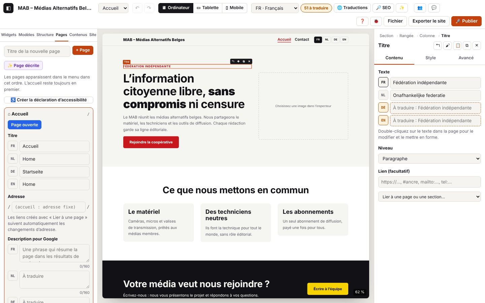

4. Pages, réglages du site, images, collections, versions

Sur cette page
- 4.1 Créer une page
- 4.2 Changer l'adresse d'une page
- 4.3 Titre et description pour Google
- 4.4 Ordre des pages, lien dans le pied de page, ouvrir une page
- 4.5 Supprimer une page
- 4.6 Personnaliser le menu
- 4.7 Créer la déclaration d'accessibilité
- 4.8 Nom et adresse du site
- 4.9 Langues du site
- 4.10 Couleurs, polices, échelles, en-tête et pied de page
- 4.11 En-tête et pied de page en blocs
- 4.12 Gérer les presets
- 4.13 Importer une image
- 4.14 Image refusée, illisible ou lourde
- 4.15 Logo du site
- 4.16 Créer une collection
- 4.17 Ouvrir une collection
- 4.18 Ajouter et modifier des éléments
- 4.19 Champs d'une collection
- 4.20 Réglages d'une collection : nom, adresse, page de détail, RSS, agenda, ordre
- 4.21 Modifier la carte et la page de détail
- 4.22 Supprimer une collection
- 4.23 Exporter les éléments en CSV
- 4.24 Importer un CSV
- 4.25 Version automatique du jour
- 4.26 Enregistrer une version
- 4.27 Restaurer une version
- 4.28 Supprimer une version
- 4.29 Erreurs de stockage des versions
- 4.30 Régler une liste de contenus (agenda à venir, trois dernières actualités…)
- 4.31 Polices du site : livrées avec le site, et police personnalisée
- 4.32 Icône du site
- 4.33 Mentions légales et vie privée
- 4.34 Nettoyer les images inutilisées
- 4.35 Fuseau horaire du site
- 4.36 Des photos sans ralentir l'éditeur
- 4.37 Importer un logo ou un pictogramme en SVG
- 4.38 Joindre un document à télécharger (PDF, DOCX, MP3…)
- Codes de ce chapitre
Ce chapitre couvre tout ce qui organise le site : ses pages et son menu, les réglages généraux (panneau Site), les images importées, les contenus répétés (collections : médias membres, actualités, agenda), leur import et export en CSV, et les versions du projet.
Domaines du journal
page.*: panneau Pages (créer, adresse, titre, description, ordre, suppression), menu (page.menu.*), déclaration d'accessibilité (page.a11y.*).settings.*: panneau Site (nom, adresse, langues, palette, polices, échelles, en-tête, pied, logo, presets).image.*: conversion des images importées (WebP, variantes, poids, erreurs).collection.*: panneau Contenus et fenêtre d'une collection (éléments, champs, réglages, carte, page de détail, CSV).version.*: fenêtre Versions du projet (enregistrer, restaurer, supprimer, nettoyage automatique).- Lignes d'autres domaines que tu croiseras ici :
store.*(historique, chapitre 1),storage.*(base locale, chapitre 1 et section 4.27),inspector.image.*(champ « image », chapitre 2),ui.*(clics, fenêtres, messages).
Dans les extraits ci-dessous, les lignes store.commit (une par modification), canvas.* (rendu du canevas) et storage.save (sauvegarde automatique) sont omises pour rester lisibles : elles sont dans les fichiers journaux/ et dans le journal copié. Chaque modification réussie est précédée d'un store.commit (DEBUG).
Pages et menu
4.1 Créer une page
But : ajouter une page au site (elle entre aussitôt dans le menu automatique).
Étapes
- Panneau de gauche Pages.
- Tape un titre dans « Titre de la nouvelle page », puis clique + Page (ou Entrée).
Ce que tu vois : la page s'ouvre, vide, dans le canevas ; un message « Page « Notre équipe » créée : /notre-equipe/ ». Sa fiche est dépliée dans le panneau.
Journal attendu (extrait réel : journaux/pages-creer.log)
Détails techniques : journal attendu
04:57:48.054 +16.29s INFO page.add Page « Notre équipe » créée : /notre-equipe/ {"id":"p_xf4i3110","slug":"notre-equipe","lang":"fr","pages":3,"menu":"automatique"}
04:57:48.054 +16.29s DEBUG store.view Vue : pageId=p_xf4i3110 {"pageId":"p_xf4i3110"}
04:57:48.066 +16.30s INFO ui.toast Message affiché : Page « Notre équipe » créée : /notre-equipe/À vérifier : page.add (INFO) avec l'adresse (slug), le nombre de pages et le type de menu (automatique ou personnalisé), puis store.view (la page s'ouvre).
Variantes (journaux/pages-creer-variantes.log)
Détails techniques : journal attendu
04:57:48.717 +16.95s WARN page.add-refused Page non créée : titre vide
04:57:48.718 +16.95s ERROR ui.toast Message affiché : Donnez un titre à la page. {"type":"error"}
04:57:48.898 +17.14s INFO page.add Page « Notre équipe » créée : /notre-equipe-2/ {"id":"p_nyf54izm","slug":"notre-equipe-2","deduplicated":true,"lang":"fr","pages":4,"menu":"automatique"}
04:57:48.898 +17.14s DEBUG store.view Vue : pageId=p_nyf54izm {"pageId":"p_nyf54izm"}
04:57:48.908 +17.14s INFO ui.toast Message affiché : Page « Notre équipe » créée : /notre-equipe-2/| Situation | Ce qui change à l'écran | Journal |
|---|---|---|
| Le titre existe déjà | l'adresse reçoit un numéro : /notre-equipe-2/ | page.add avec "deduplicated":true |
| Menu personnalisé (4.6) | la page n'est pas ajoutée au menu : ajoute-la avec « + Page absente du menu… » | page.add avec "menu":"personnalisé" |
Erreurs
| Situation | Message affiché | Journal | Que faire |
|---|---|---|---|
| Titre vide | « Donnez un titre à la page. » | page.add-refused (WARN) | Tape un titre. |
| Refus du cœur (rare) | le message du refus | page.refused (WARN) avec action = add et error.message | Envoie le journal. |
4.2 Changer l'adresse d'une page
But : choisir l'adresse de la page (/equipe/), et au besoin une adresse par langue (/nl/ons-team/).
Étapes
- Déplie la fiche de la page dans le panneau Pages.
- Champ Adresse : tape la nouvelle adresse, puis Entrée (ou clique ailleurs).
- Pour une autre langue : champ
/nl/…/, ou le bouton ⟲ qui propose l'adresse depuis le titre traduit.
Ce que tu vois : « Adresse : /equipe/ ». Les liens créés avec « Lier à une page » suivent le changement.
Journal attendu (extrait réel : journaux/pages-adresse.log)
Détails techniques : journal attendu
04:57:51.002 +19.24s INFO page.slug Adresse de la page modifiée : /notre-equipe/ → /equipe/ {"id":"p_xf4i3110","from":"notre-equipe","to":"equipe","lang":"fr"}
04:57:51.003 +19.24s INFO ui.toast Message affiché : Adresse : /equipe/
04:57:51.337 +19.57s WARN page.refused Modification refusée : Une page « contact » existe déjà. {"action":"slug","error":{"name":"Error","message":"Une page « contact » existe déjà.","stack":"Error: Une page « contact » existe déjà.\nat setPageSlug (http://localhost:8791/core/site.js:116:144)\nat apply.source (http://localhost:8791/editor/pages.js:38:22)\nat apply (http://localhost:8791/editor/pages.js:16:16)\nat saveSlug (http://localhost:8791/editor/pages.js:38:11)"}}
04:57:51.337 +19.57s ERROR ui.toast Message affiché : Une page « contact » existe déjà. {"type":"error"}
04:57:51.681 +19.92s INFO page.title Titre de la page (NL) : « Ons team » {"id":"p_xf4i3110","lang":"nl","length":8}
04:57:51.950 +20.19s DEBUG page.slug-suggest Adresse NL proposée depuis le titre traduit {"id":"p_xf4i3110","lang":"nl","slug":"ons-team"}
04:57:51.959 +20.20s INFO page.slug Adresse en NL : /nl/ons-team/ {"id":"p_xf4i3110","from":"","to":"ons-team","lang":"nl"}À vérifier : page.slug (INFO) avec from, to et lang. Le bouton ⟲ écrit d'abord page.slug-suggest (DEBUG) avec l'adresse proposée, puis page.slug pour la langue.
Variantes
| Situation | Ce qui change à l'écran | Journal |
|---|---|---|
| Adresse d'une autre langue vidée | la page reprend l'adresse de la langue principale dans cette langue | page.slug « même adresse que la langue principale », "to":"" |
| Accueil | champ grisé « (accueil : adresse fixe) » | rien : l'adresse de l'accueil ne se change pas |
Erreurs
| Situation | Message affiché | Journal | Que faire |
|---|---|---|---|
| Adresse déjà prise | « Une page « contact » existe déjà. » | page.refused (WARN), action = slug, puis ui.toast (ERROR) | Choisis une autre adresse ; le champ reprend l'ancienne. |
| Adresse vide (langue principale) | « L'adresse ne peut pas être vide. » | page.refused (WARN), action = slug | Tape une adresse. |
| Adresse d'une autre langue refusée | idem | page.refused (WARN), action = slug-lang | idem |
4.3 Titre et description pour Google
But : donner à la page son titre (menu, onglet, résultats de recherche) et sa description, dans chaque langue.
Étapes
- Fiche de la page → Titre : une ligne par langue (FR, NL, DE, EN).
- Description pour Google : une phrase de 160 caractères au plus ; le compteur passe au rouge au-delà.
Ce que tu vois : le menu et le sélecteur de pages suivent le titre en direct ; les langues sans titre sont entourées (« À traduire »).
Journal attendu (extrait réel : journaux/pages-titre-description.log)
Détails techniques : journal attendu
04:57:52.552 +20.79s INFO page.title Titre de la page (DE) : « Unser Team » {"id":"p_xf4i3110","lang":"de","length":10}
04:57:52.844 +21.08s INFO page.seo Description pour Google (FR) : 44 caractères {"id":"p_xf4i3110","lang":"fr","length":44}
04:57:53.128 +21.36s WARN page.seo Description pour Google trop longue (175/160) : Google la coupera {"id":"p_xf4i3110","lang":"nl","length":175}À vérifier : un seul page.title (INFO) quand tu quittes le champ (pendant la frappe : page.title en TRACE, invisible par défaut), avec la langue et la longueur ; page.seo (INFO) avec le nombre de caractères.
Variantes
| Situation | Ce qui change à l'écran | Journal |
|---|---|---|
| Titre effacé | la page s'appelle « Sans titre » dans le menu | page.title avec "empty":true |
Erreurs
| Situation | Message affiché | Journal | Que faire |
|---|---|---|---|
| Description de plus de 160 caractères | compteur rouge 175/160 | page.seo (WARN) « trop longue (175/160) : Google la coupera » | Raccourcis la phrase (le site est publié quand même). |
4.4 Ordre des pages, lien dans le pied de page, ouvrir une page
But : ranger les pages dans le menu, mettre une page (mentions légales…) dans le pied de page plutôt que dans le menu, passer d'une page à l'autre.
Étapes
- Fiche d'une page : ↑ / ↓ pour la monter ou la descendre (l'accueil reste en premier).
- Case « Lien dans le pied de page (et pas dans le menu) ».
- Ouvrir affiche la page dans le canevas (ou le sélecteur de pages en haut).
Journal attendu (extrait réel : journaux/pages-ordre-pied.log)
Détails techniques : journal attendu
04:57:53.624 +21.86s INFO page.move Page « Notre équipe » montée dans le menu (position 2) {"id":"p_xf4i3110","dir":-1,"from":2,"to":1}
04:57:53.957 +22.19s INFO page.footer-link « Notre équipe » : lien dans le pied de page (retirée du menu) {"id":"p_xf4i3110","footer":true}
04:57:54.292 +22.53s INFO page.footer-link « Notre équipe » : de retour dans le menu {"id":"p_xf4i3110","footer":false}
04:57:54.800 +23.04s INFO page.open Page ouverte : Accueil {"id":"p_v3ibds93","slug":""}
04:57:54.801 +23.04s DEBUG store.view Vue : pageId=p_v3ibds93 {"pageId":"p_v3ibds93"}À vérifier : page.move (INFO) avec from et to (0 = accueil), page.footer-link (INFO) avec footer, page.open (INFO) puis store.view.
Variantes
| Situation | Ce qui change à l'écran | Journal |
|---|---|---|
| Page choisie dans le sélecteur du haut | même résultat | seulement store.view (pas de page.open) |
Erreurs
| Situation | Message affiché | Journal | Que faire |
|---|---|---|---|
| Déplacement refusé (rare) | le message du refus | page.refused (WARN), action = move | Envoie le journal. |
4.5 Supprimer une page
But : retirer une page du site (Ctrl+Z la fait revenir).
Étapes
- Fiche de la page → ✕, puis confirme.
Ce que tu vois : la page disparaît du panneau, du menu et du sélecteur ; si elle était ouverte, l'accueil s'affiche.
Journal attendu (extrait réel, avec une première tentative annulée : journaux/pages-supprimer.log)
Détails techniques : journal attendu
04:57:49.534 +17.77s DEBUG page.delete-cancel Suppression de « Notre équipe » annulée {"id":"p_nyf54izm"}
04:57:49.724 +17.96s DEBUG store.view Vue : pageId=p_v3ibds93 {"pageId":"p_v3ibds93"}
04:57:49.748 +17.98s INFO page.delete Page « Notre équipe » supprimée (Ctrl+Z pour la retrouver) {"id":"p_nyf54izm","slug":"notre-equipe-2","pages":3,"wasOpen":true}À vérifier : page.delete (INFO) avec l'adresse et le nombre de pages restantes ; "wasOpen":true si elle était affichée (précédé de store.view vers l'accueil).
Variantes
| Situation | Ce qui change à l'écran | Journal |
|---|---|---|
| Tu réponds « Annuler » | rien ne change | page.delete-cancel (DEBUG) |
| Ctrl+Z juste après | la page revient | store.undo (chapitre 2) |
Erreurs
| Situation | Message affiché | Journal | Que faire |
|---|---|---|---|
| Page d'accueil | pas de bouton ✕ sur l'accueil (il est protégé) | rien ; si une suppression arrivait quand même : page.refused (WARN), action = delete, « La page d'accueil ne peut pas être supprimée. » | Change plutôt son contenu. |
4.6 Personnaliser le menu
But : ajouter des liens (réseaux sociaux, sites amis), des sous-menus et des libellés différents du titre des pages.
Étapes
- Panneau Pages, en bas : Personnaliser le menu (liens, sous-menus, libellés).
- + Lien : libellé et adresse (
https://…,#ancre). - Sur chaque entrée : ↑ ↓ (ordre), ⇥ (sous-menu de l'entrée au-dessus), ⇤ (sortir du sous-menu), ✕ (retirer du menu), libellé dans la langue choisie en haut.
- « + Page absente du menu… » remet une page retirée.
- Revenir au menu automatique efface les personnalisations (Ctrl+Z possible).
Journal attendu (extrait réel : journaux/pages-menu.log)
Détails techniques : journal attendu
04:57:55.444 +23.68s INFO page.menu.customize Menu personnalisé : 3 entrée(s) reprises des pages {"items":3}
04:57:55.784 +24.02s WARN page.menu.link-refused Lien du menu non ajouté : libellé ou adresse vide {"label":false,"url":false}
04:57:55.784 +24.02s ERROR ui.toast Message affiché : Indiquez un libellé et une adresse. {"type":"error"}
04:57:56.018 +24.25s INFO page.menu.link-add Lien « Facebook » ajouté au menu {"url":"https://www.facebook.com/mab","newTab":true,"lang":"fr","items":4}
04:57:56.466 +24.70s INFO page.menu.indent Menu : lien « Facebook » mis en sous-menu de l’entrée au-dessus {"item":"m_24f4joq","kind":"link","index":3}
04:57:56.816 +25.05s INFO page.menu.outdent Menu : lien « Facebook » sorti du sous-menu {"item":"m_24f4joq","kind":"link","sub":true,"index":0}
04:57:57.174 +25.41s INFO page.menu.move Menu : lien « Facebook » monté {"item":"m_24f4joq","kind":"link","index":3,"dir":-1}
04:57:57.517 +25.75s INFO page.menu.label Libellé du menu (FR) : « Notre page Facebook » {"item":"m_24f4joq","kind":"link","lang":"fr","custom":true}
04:57:57.874 +26.11s INFO page.menu.url Adresse d’un lien du menu modifiée {"item":"m_24f4joq","url":"https://www.facebook.com/media.alternatif"}
04:57:58.377 +26.61s INFO page.menu.remove Menu : « Notre équipe » retiré (la page existe toujours) {"item":"m_hn0cfcu","kind":"page","index":1}
04:57:58.722 +26.96s INFO page.menu.page-add Page « Notre équipe » ajoutée au menu {"page":"p_xf4i3110"}À vérifier : page.menu.customize (nombre d'entrées reprises), puis une ligne INFO par action : page.menu.link-add, page.menu.indent, page.menu.outdent, page.menu.move, page.menu.label, page.menu.url, page.menu.remove, page.menu.page-add. Les données donnent l'entrée (item), son type (page ou link) et sa position (index, sub pour un sous-menu).
Retour au menu automatique (journaux/pages-menu-auto.log)
Détails techniques : journal attendu
04:57:59.389 +27.63s DEBUG page.menu.auto-cancel Retour au menu automatique annulé
04:57:59.591 +27.83s INFO page.menu.auto Menu automatique rétabli (toutes les pages, dans l’ordre) {"dropped":4}Variantes
| Situation | Ce qui change à l'écran | Journal |
|---|---|---|
Lien vers un autre site (https://…) | il s'ouvrira dans un nouvel onglet | page.menu.link-add avec "newTab":true |
| Libellé vidé | l'entrée reprend le titre de la page | page.menu.label avec "custom":false |
| « Annuler » au retour au menu automatique | rien ne change | page.menu.auto-cancel (DEBUG) |
Erreurs
| Situation | Message affiché | Journal | Que faire |
|---|---|---|---|
| Libellé ou adresse vide | « Indiquez un libellé et une adresse. » | page.menu.link-refused (WARN) avec label/url à false pour ce qui manque | Remplis les deux champs. |
| Sous-menu impossible (deux niveaux, première entrée) | « Un seul niveau de sous-menu est possible… » | page.refused (WARN), action = menu-indent | Le bouton ⇥ est grisé dans ces cas ; envoie le journal si le message apparaît. |
| Adresse de lien refusée | le message du refus | page.refused (WARN), action = menu-link-add ou menu-url | Utilise https://, mailto:, tel: ou #ancre. |
4.7 Créer la déclaration d'accessibilité
But : générer la page « Accessibilité » dans les langues du site (français, néerlandais, allemand, anglais, japonais ; référence WCAG 2.2 niveau AA et EN 301 549 v3.2.1, la version japonaise citant aussi JIS X 8341-3), pré-remplie avec les points relevés par la vérification du site, et la lier dans le pied de page.
Étapes
- Panneau Pages → ♿ Créer la déclaration d'accessibilité.
- Vérifie l'organisation, indique l'adresse e-mail de contact, l'état de conformité, la date et les contenus non accessibles connus.
- Créer la page.
Ce que tu vois : la page s'ouvre ; message « Page « Accessibilité » créée dans les langues du site, avec un lien dans le pied de page. » Relis-la : ce modèle n'est pas un avis juridique.
Journal attendu (extrait réel, avec une première tentative sans e-mail : journaux/pages-accessibilite.log)
Détails techniques : journal attendu
04:58:00.167 +28.40s INFO page.a11y.open Assistant de déclaration d’accessibilité ouvert (1 limite(s) pré-remplie(s)) {"limits":1}
04:58:00.170 +28.41s DEBUG ui.dialog.open Fenêtre ouverte : Déclaration d’accessibilité {"id":"a11yDialog","class":"audit","modal":true}
04:58:00.234 +28.47s WARN page.a11y.refused Déclaration non créée : Indiquez une adresse e-mail valide pour le contact accessibilité. {"email":false,"status":"partial","error":{"name":"Error","message":"Indiquez une adresse e-mail valide pour le contact accessibilité.","stack":"Error: Indiquez une adresse e-mail valide pour le contact accessibilité.\nat buildAccessibilityPage (http://localhost:8791/core/a11ypage.js:84:17)\nat addAccessibilityPage (http://localhost:8791/core/a11ypage.js:113:16)\nat HTMLButtonElement.onclick (http://localhost:8791/editor/pages.js:213:21)"}}
04:58:00.235 +28.47s ERROR ui.toast Message affiché : Indiquez une adresse e-mail valide pour le contact accessibilité. {"type":"error"}
04:58:00.497 +28.73s INFO page.a11y.create Page « Accessibilité » créée en 4 langues : /accessibilite/ {"id":"p_jlagazl7","slug":"accessibilite","status":"partial","limits":1,"langs":["fr","nl","de","en"],"footerLink":true}
04:58:00.498 +28.73s DEBUG store.view Vue : pageId=p_jlagazl7 {"pageId":"p_jlagazl7"}
04:58:00.506 +28.74s INFO ui.toast Message affiché : Page « Accessibilité » créée en 4 langues, avec un lien dans le pied de page.
04:58:00.510 +28.75s DEBUG ui.dialog.close Fenêtre fermée : Déclaration d’accessibilité {"id":"a11yDialog"}À vérifier : page.a11y.open (nombre de limites pré-remplies ; "exists":true si une page /accessibilite/ existe déjà), puis page.a11y.create avec l'adresse, l'état (partial, full, none), les langues et "footerLink":true.
Erreurs
| Situation | Message affiché | Journal | Que faire |
|---|---|---|---|
| E-mail absent ou invalide | « Indiquez une adresse e-mail valide pour le contact accessibilité. » | page.a11y.refused (WARN) avec "email":false | Indique une adresse (le curseur y est placé). |
Langues de la déclaration (cycle 33) : la page est rédigée dans chacune des langues du site parmi les cinq d'Atelier. La référence est WCAG 2.2 niveau AA, reprise par la norme européenne EN 301 549 v3.2.1 ; la version japonaise cite en plus la norme JIS X 8341-3 (accessibilité des contenus web au Japon). Le texte « Voies de recours » cite les médiateurs belges (sauf en japonais, qui renvoie au service compétent) : adapte-le à ton pays.
Réglages du site (panneau Site)
4.8 Nom et adresse du site
But : nommer le site (onglet du navigateur, en-tête par défaut, flux RSS) et donner son adresse publique (plan du site, liens de langue, RSS, partage).
Étapes
- Panneau Site → Identité : « Nom du site », « Adresse du site ».
Journal attendu (extrait réel : journaux/pages-reglages-identite.log)
Détails techniques : journal attendu
04:57:33.489 +1.73s INFO settings.name Nom du site : « MAB – Médias Alternatifs Belges » {"length":31}
04:57:33.790 +2.03s WARN settings.refused Réglage refusé : L’adresse du site doit commencer par https:// {"setting":"base-url","error":{"name":"Error","message":"L’adresse du site doit commencer par https://","stack":"Error: L’adresse du site doit commencer par https://\nat setSiteMeta (http://localhost:8791/core/site.js:238:75)\nat http://localhost:8791/editor/panels.js:158:58\nat apply (http://localhost:8791/editor/panels.js:22:16)\nat HTMLInputElement.<anonymous> (http://localhost:8791/editor/panels.js:158:47)"}}
04:57:33.791 +2.03s ERROR ui.toast Message affiché : L’adresse du site doit commencer par https:// {"type":"error"}
04:57:34.074 +2.31s INFO settings.base-url Adresse du site : https://www.media-alternatif.be {"url":"https://www.media-alternatif.be"}À vérifier : settings.name (INFO, une fois en quittant le champ ; TRACE pendant la frappe) ; settings.base-url (INFO) avec l'adresse.
Variantes (journaux/pages-reglages-adresse-vide.log)
Détails techniques : journal attendu
04:57:47.265 +15.50s INFO settings.base-url Adresse du site effacée (plan du site, RSS et liens de langue absolus désactivés) {"url":null}| Situation | Ce qui change à l'écran | Journal |
|---|---|---|
| Adresse effacée | plus de plan du site ni de flux RSS à l'export | settings.base-url « Adresse du site effacée… », "url":null |
| Nom vidé | l'en-tête affiche un nom vide | settings.name avec "empty":true |
Erreurs
| Situation | Message affiché | Journal | Que faire |
|---|---|---|---|
Adresse sans https:// | « L'adresse du site doit commencer par https:// » | settings.refused (WARN), setting = base-url | Écris l'adresse complète : https://www.exemple.be. |
4.9 Langues du site
But : choisir les langues du site (français, néerlandais, allemand, anglais, japonais).
Étapes
- Panneau Site → Langues : coche ou décoche. La langue principale (« (principale) ») ne peut pas être décochée.
Ce que tu vois : le sélecteur de langue du haut, les champs « À traduire » et le badge « … à traduire » suivent.
Journal attendu (extrait réel : journaux/pages-reglages-langues.log)
Détails techniques : journal attendu
04:57:34.577 +2.81s INFO settings.lang-remove Langue retirée : English (ses traductions restent dans le projet) {"lang":"en","languages":["fr","nl","de"],"main":"fr"}
04:57:34.577 +2.81s DEBUG store.view Vue :
04:57:34.873 +3.11s INFO settings.lang-add Langue ajoutée : English (textes à traduire) {"lang":"en","languages":["fr","nl","de","en"],"main":"fr"}
04:57:34.873 +3.11s DEBUG store.view Vue : À vérifier : settings.lang-remove / settings.lang-add (INFO) avec la langue, la liste des langues et la langue principale (main).
Variantes
| Situation | Ce qui change à l'écran | Journal |
|---|---|---|
| Langue retirée puis remise | ses traductions reviennent (elles restaient dans le projet) | settings.lang-remove puis settings.lang-add |
| Changer la langue principale | elle se choisit à la création du site (Fichier → Nouveau site vide : français, néerlandais, allemand, anglais ou japonais, voir 1.5) et ne se change plus ensuite ; un projet ouvert depuis un fichier .json garde la langue principale de ce fichier | project.new {"lang":…} |
Erreurs
| Situation | Message affiché | Journal | Que faire |
|---|---|---|---|
| Retirer la langue principale (case grisée) | « La langue principale doit rester active. » | settings.refused (WARN), setting = lang-remove | La langue principale reste toujours active. |
4.10 Couleurs, polices, échelles, en-tête et pied de page
But : régler l'apparence de tout le site en un endroit (le chapitre 3 explique comment les éléments utilisent ces réglages).
Étapes
- Palette : clique une couleur pour la changer, renomme-la, + Couleur pour en ajouter une, ✕ pour supprimer une couleur ajoutée ; « Couleurs hors palette » remplace une couleur figée partout.
- Typographie : police des titres et du texte, arrondi des angles, largeur du contenu, transitions entre pages.
- Échelle de texte et Espacements : tailles sur mobile et sur grand écran.
- En-tête par défaut : en-tête fixe, choix de la langue, bouton « Menu » sur mobile. Pied de page : texte par langue.
Journal attendu (extrait réel : journaux/pages-reglages-design.log)
Détails techniques : journal attendu
04:57:35.385 +3.62s INFO settings.color Couleur « Principale » : #a01014 {"key":"c1","value":"#a01014"}
04:57:35.565 +3.80s INFO settings.color-name Couleur c1 renommée : « Rouge MAB » {"key":"c1","name":"Rouge MAB"}
04:57:35.760 +4.00s INFO settings.color-add Couleur ajoutée à la palette (c7) {"key":"c7","value":"#7c3aed","colors":7}
04:57:36.068 +4.30s INFO settings.color-remove Couleur « Couleur 7 » supprimée de la palette {"key":"c7","value":"#7c3aed"}
04:57:36.355 +4.59s INFO settings.font Police des titres : Système (aucun téléchargement) {"role":"heading","font":"system","google":false}
04:57:36.534 +4.77s INFO settings.theme Arrondi des angles : 12 px {"key":"radius","value":12,"typed":"12"}
04:57:36.826 +5.06s INFO settings.type-scale Échelle de texte : Texte mobile (px) = 17 {"key":"minSize","from":16,"to":17}
04:57:37.265 +5.50s INFO settings.space-scale Espacements : Base mobile (px) = 14 {"key":"minSize","from":16,"to":14}
04:57:37.724 +5.96s INFO settings.header En-tête par défaut : bouton « Menu » sur mobile non {"key":"burger","value":false}
04:57:37.924 +6.16s INFO settings.footer-text Texte du pied de page (FR) : 47 caractères {"lang":"fr","length":47}À vérifier : une ligne INFO par réglage : settings.color (clé c1… et valeur ; une seule fois quand tu relâches le sélecteur, TRACE pendant le glissement), settings.color-name, settings.color-add, settings.color-remove, settings.font ("google":true si la police est chargée depuis Google Fonts), settings.theme (radius, contentWidth, pageTransitions), settings.type-scale, settings.space-scale (from → to), settings.header (burger, sticky, showLangs), settings.footer-text (langue et longueur).
Variantes
| Situation | Ce qui change à l'écran | Journal |
|---|---|---|
| Couleur qui rend un texte peu lisible | la paire passe au rouge ✗ dans « Contrastes » | settings.color avec lowContrast (ex. ["Texte sur le fond 3,1:1"]) |
| Couleur figée remplacée par une couleur de la palette | « #… remplacée partout (n réglages). » | settings.color-replace (INFO) avec from, to, count |
| Valeur hors limites (ex. arrondi 99) | la valeur est ramenée dans les limites | settings.theme avec value (retenue) différent de typed (tapée) |
Erreurs
| Situation | Message affiché | Journal | Que faire |
|---|---|---|---|
| Réglage refusé par le cœur | le message du refus | settings.refused (WARN) avec setting (ex. color-add, font-heading, type-minSize) et error.message | Envoie le journal. |
4.11 En-tête et pied de page en blocs
But : remplacer l'en-tête ou le pied par défaut par des blocs modifiables (logo, menu, langues, textes…).
Étapes
- Panneau Site → En-tête et pied de page → Personnaliser avec des blocs (puis Modifier les fois suivantes).
- Modifie les blocs dans le canevas, puis Terminer dans le bandeau.
- Revenir au défaut pour abandonner la version en blocs (Ctrl+Z possible).
Journal attendu (extrait réel : journaux/pages-reglages-entete-blocs.log)
Détails techniques : journal attendu
04:57:38.442 +6.68s INFO settings.layout-customize En-tête converti en blocs modifiables {"zone":"header"}
04:57:38.442 +6.68s INFO settings.layout-edit Modification de l’en-tête en blocs {"zone":"header"}
04:57:38.442 +6.68s INFO store.edit-target Édition : header {"kind":"header"}
04:57:38.900 +7.14s INFO store.edit-target Retour à la page
04:57:39.490 +7.73s INFO settings.layout-reset En-tête : retour à la version par défaut (Ctrl+Z pour annuler) {"zone":"header"}À vérifier : settings.layout-customize (la première fois seulement), settings.layout-edit ("custom":true les fois suivantes), store.edit-target (mode d'édition), puis settings.layout-reset.
4.12 Gérer les presets
But : renommer, dupliquer ou supprimer les presets (styles enregistrés), créés depuis l'onglet Style d'un élément (chapitre 3, style.preset-create).
Étapes
- Panneau Site → Presets : renomme dans le champ (Entrée), ⧉ duplique, ✕ supprime (les éléments gardent leur apparence).
Journal attendu (extrait réel : journaux/pages-reglages-presets.log)
Détails techniques : journal attendu
04:57:41.127 +9.36s INFO settings.preset-rename Preset renommé : « Titre MAB » → « Titre principal » {"id":"ps_fzdure4d","type":"heading"}
04:57:41.448 +9.69s INFO settings.preset-duplicate Preset « Titre principal » dupliqué {"id":"ps_fzdure4d","type":"heading","presets":2}
04:57:41.736 +9.97s DEBUG settings.preset-delete-cancel Suppression du preset « Titre principal » annulée {"id":"ps_fzdure4d"}
04:57:41.945 +10.18s INFO settings.preset-delete Preset « Titre principal » supprimé (1 élément garde son apparence) {"id":"ps_fzdure4d","type":"heading","used":1}À vérifier : settings.preset-rename, settings.preset-duplicate (nombre de presets), settings.preset-delete avec used (éléments concernés) et "wasDefault":true si c'était le preset par défaut de ce type.
Variantes
| Situation | Ce qui change à l'écran | Journal |
|---|---|---|
| Preset utilisé, tu réponds « Annuler » | rien ne change | settings.preset-delete-cancel (DEBUG) |
| Preset inutilisé | suppression sans question | settings.preset-delete avec "used":0 |
Erreurs
| Situation | Message affiché | Journal | Que faire |
|---|---|---|---|
| Nom vide | rien (le nom est gardé) | rien | Tape un nom. |
| Refus du cœur | le message du refus | settings.refused (WARN), setting = preset-… | Envoie le journal. |
Images
4.13 Importer une image
But : ajouter une image (logo, photo d'une section, image d'un élément de collection). Atelier la convertit dans le navigateur en WebP, la réduit à 1600 px de large au plus, et prépare des variantes de 480 et 960 px pour les petits écrans.
Étapes
- Dans un champ image (inspecteur, logo du panneau Site, champ « Image » d'un élément) : Importer une image (ou Remplacer).
- Choisis un fichier JPG, PNG, WebP, GIF, AVIF ou BMP.
Ce que tu vois : la vignette ; message « Image ajoutée en WebP : 1600×960 px, 10 Ko. »
Journal attendu (extrait réel, logo de 2000×1200 px : journaux/images-import.log)
Détails techniques : journal attendu
04:57:42.517 +10.75s INFO inspector.image.start [inspector.image#1] Import d’une image {"field":"logo","type":"image/png","kb":2538}
04:57:42.517 +10.75s INFO image.import.start [image.import#1] Import de l’image « logo-mab.png » {"name":"logo-mab.png","type":"image/png","kb":2538}
04:57:42.596 +10.83s DEBUG image.import.decode [image.import#1 · 79 ms] Image lue : 2000×1200 px {"width":2000,"height":1200,"ms":78}
04:57:42.596 +10.83s DEBUG image.import.resize [image.import#1 · 79 ms] Réduite à 1600×960 px (largeur maximale 1600 px) {"from":"2000×1200","to":"1600×960"}
04:57:42.787 +11.02s DEBUG image.import.encode [image.import#1 · 270 ms] Version principale : 1600×960 px, 10 Ko (image/webp) {"w":1600,"h":960,"mime":"image/webp","kb":10,"ms":191}
04:57:42.817 +11.05s DEBUG image.import.variant [image.import#1 · 300 ms] Variante 480 px : 2 Ko {"w":480,"kb":2,"ms":28}
04:57:42.920 +11.16s DEBUG image.import.variant [image.import#1 · 403 ms] Variante 960 px : 5 Ko {"w":960,"kb":5,"ms":102}
04:57:42.924 +11.16s INFO image.import.ok [image.import#1 · 407 ms] Image prête : 1600×960 px, 10 Ko (−99 %), 2 variante(s) {"name":"logo-mab.webp","mime":"image/webp","width":1600,"height":960,"kbIn":2538,"kbOut":10,"gain":99,"variants":[480,960]}
04:57:42.924 +11.16s DEBUG inspector.image.webp [inspector.image#1 · 407 ms] Image convertie en WebP {"width":1600,"height":960,"kb":10,"variants":2}
04:57:42.944 +11.18s INFO settings.logo Logo importé {"kind":"asset","asset":"img_o0aqpu4t","file":"logo-mab.webp"}
04:57:42.944 +11.18s INFO inspector.image.ok [inspector.image#1 · 427 ms] Image ajoutée : 1600×960 px {"asset":"img_o0aqpu4t","field":"logo"}
04:57:42.945 +11.18s INFO ui.toast Message affiché : Image ajoutée en WebP : 1600×960 px, 10 Ko.À vérifier : le parcours image.import : start (nom, type, poids en Ko), decode (dimensions d'origine, durée), resize (si plus large que 1600 px), encode (version principale : dimensions, poids, type), une ligne variant par variante, puis ok avec le poids avant/après (kbIn, kbOut), le gain en % et les variantes. Il est encadré par le parcours inspector.image du champ (chapitre 2) et suivi de la ligne du champ qui reçoit l'image (settings.logo, collection.item.value…).
Variantes
| Situation | Ce qui change à l'écran | Journal |
|---|---|---|
| Petite image (moins de 480 px) | pas de variantes, pas de réduction (journaux/images-import-petite.log) | pas de image.import.resize ni image.import.variant ; ok avec "variants":[] |
| Navigateur sans WebP (vieux Safari) | image enregistrée en JPEG (journaux/images-sans-webp.log) | image.import.webp-unsupported (WARN), puis encode avec "mime":"image/jpeg" |
Image d'un élément de collection (journaux/images-collection.log) | la carte et la page de détail la montrent | image.import.ok puis collection.item.value ("field":"image") |
Détails techniques : journal attendu
04:57:43.496 +11.73s INFO inspector.image.start [inspector.image#3] Import d’une image {"field":"logo","type":"image/png","kb":93}
04:57:43.496 +11.73s INFO image.import.start [image.import#3] Import de l’image « logo-jpeg.png » {"name":"logo-jpeg.png","type":"image/png","kb":93}
04:57:43.503 +11.74s DEBUG image.import.decode [image.import#3 · 7 ms] Image lue : 400×200 px {"width":400,"height":200,"ms":7}
04:57:43.517 +11.75s WARN image.import.webp-unsupported [image.import#3 · 21 ms] Ce navigateur ne sait pas produire du WebP : image enregistrée en JPEG {"w":400,"h":200,"got":"image/png"}
04:57:43.531 +11.77s DEBUG image.import.encode [image.import#3 · 35 ms] Version principale : 400×200 px, 3 Ko (image/jpeg) {"w":400,"h":200,"mime":"image/jpeg","kb":3,"ms":28}
04:57:43.532 +11.77s INFO image.import.ok [image.import#3 · 36 ms] Image prête : 400×200 px, 3 Ko (−97 %), 0 variante(s) {"name":"logo-jpeg.jpg","mime":"image/jpeg","width":400,"height":200,"kbIn":93,"kbOut":3,"gain":97,"variants":[]}
04:57:43.532 +11.77s DEBUG inspector.image.webp [inspector.image#3 · 36 ms] Image convertie en WebP {"width":400,"height":200,"kb":3}
04:57:43.557 +11.79s INFO settings.logo Logo importé {"kind":"asset","asset":"img_t79x5gy0","file":"logo-jpeg.jpg"}
04:57:43.557 +11.79s INFO inspector.image.ok [inspector.image#3 · 61 ms] Image ajoutée : 400×200 px {"asset":"img_t79x5gy0","field":"logo"}
04:57:43.557 +11.79s INFO ui.toast Message affiché : Image ajoutée en WebP : 400×200 px, 3 Ko.4.14 Image refusée, illisible ou lourde
But : comprendre pourquoi une image n'est pas acceptée ou alourdit le site.
Journal attendu — fichier d'un type refusé (TIFF, PDF… ; un SVG est accepté, voir 4.37 : journaux/images-type-refuse.log)
Détails techniques : journal attendu
13:41:25.814 +12.34s INFO inspector.image.start [inspector.image#4] Import d’une image {"field":"logo","type":"image/tiff","kb":0}
13:41:25.815 +12.34s WARN image.type-refused Image refusée : type « image/tiff » non pris en charge (JPG, PNG, WebP, GIF, AVIF, BMP ou SVG) {"name":"scan.tiff","type":"image/tiff","kb":1}
13:41:25.815 +12.34s ERROR inspector.image.fail [inspector.image#4 · 1 ms] Image non importée : Format non pris en charge. Utilisez une image JPG, PNG, WebP, GIF ou SVG. {"field":"logo","type":"image/tiff","error":{"name":"Error","message":"Format non pris en charge. Utilisez une image JPG, PNG, WebP, GIF ou SVG.","stack":"Error: Format non pris en charge. Utilisez une image JPG, PNG, WebP, GIF ou SVG.\nat imageToWebp (http://localhost:8834/editor/images.js:66:11)\nat HTMLInputElement.<anonymous> (http://localhost:8834/editor/fields.js:224:25)\nat eval (eval at evaluate (:290:30), <anonymous>:28:11)\nat UtilityScript.evaluate (<anonymous>:292:16)"}}
13:41:25.816 +12.34s ERROR ui.toast Message affiché : Format non pris en charge. Utilisez une image JPG, PNG, WebP, GIF ou SVG. {"type":"error"}Journal attendu — fichier illisible (abîmé, incomplet, ou format que ce navigateur ne décode pas : journaux/images-illisible.log)
Détails techniques : journal attendu
04:57:44.324 +12.56s INFO inspector.image.start [inspector.image#5] Import d’une image {"field":"logo","type":"image/png","kb":4}
04:57:44.324 +12.56s INFO image.import.start [image.import#4] Import de l’image « photo-abimee.png » {"name":"photo-abimee.png","type":"image/png","kb":4}
04:57:44.328 +12.56s ERROR image.import.fail [image.import#4 · 4 ms] Image illisible : fichier abîmé, incomplet, ou format que ce navigateur ne sait pas décoder. {"name":"photo-abimee.png","type":"image/png","kb":4,"cause":"The source image could not be decoded.","error":{"name":"Error","message":"Image illisible : fichier abîmé, incomplet, ou format que ce navigateur ne sait pas décoder.","stack":"Error: Image illisible : fichier abîmé, incomplet, ou format que ce navigateur ne sait pas décoder.\nat imageToWebp (http://localhost:8791/editor/images.js:51:27)\nat async HTMLInputElement.<anonymous> (http://localhost:8791/editor/fields.js:154:19)","cause":"The source image could not be decoded."}}
04:57:44.328 +12.56s ERROR inspector.image.fail [inspector.image#5 · 4 ms] Image non importée : Image illisible : fichier abîmé, incomplet, ou format que ce navigateur ne sait pas décoder. {"field":"logo","type":"image/png","error":{"name":"Error","message":"Image illisible : fichier abîmé, incomplet, ou format que ce navigateur ne sait pas décoder.","stack":"Error: Image illisible : fichier abîmé, incomplet, ou format que ce navigateur ne sait pas décoder.\nat imageToWebp (http://localhost:8791/editor/images.js:51:27)\nat async HTMLInputElement.<anonymous> (http://localhost:8791/editor/fields.js:154:19)","cause":"The source image could not be decoded."}}
04:57:44.329 +12.57s ERROR ui.toast Message affiché : Image illisible : fichier abîmé, incomplet, ou format que ce navigateur ne sait pas décoder. {"type":"error"}Journal attendu — image très lourde (photo de 11 Mo : journaux/images-lourde.log)
Détails techniques : journal attendu
04:57:44.753 +12.99s INFO inspector.image.start [inspector.image#6] Import d’une image {"field":"logo","type":"image/png","kb":10753}
04:57:44.754 +12.99s INFO image.import.start [image.import#5] Import de l’image « photo-lourde.png » {"name":"photo-lourde.png","type":"image/png","kb":10753}
04:57:44.754 +12.99s WARN image.import.heavy [image.import#5 · 0 ms] Fichier très lourd (11 Mo) : la conversion peut prendre plusieurs secondes {"kb":10753,"limit":8192}
04:57:44.851 +13.09s DEBUG image.import.decode [image.import#5 · 97 ms] Image lue : 2000×1600 px {"width":2000,"height":1600,"ms":98}
04:57:44.852 +13.09s DEBUG image.import.resize [image.import#5 · 98 ms] Réduite à 1600×1280 px (largeur maximale 1600 px) {"from":"2000×1600","to":"1600×1280"}
04:57:45.306 +13.54s DEBUG image.import.encode [image.import#5 · 552 ms] Version principale : 1600×1280 px, 1194 Ko (image/webp) {"w":1600,"h":1280,"mime":"image/webp","kb":1194,"ms":454}
04:57:45.349 +13.59s DEBUG image.import.variant [image.import#5 · 595 ms] Variante 480 px : 61 Ko {"w":480,"kb":61,"ms":41}
04:57:45.518 +13.76s DEBUG image.import.variant [image.import#5 · 764 ms] Variante 960 px : 352 Ko {"w":960,"kb":352,"ms":167}
04:57:45.519 +13.76s WARN image.import.big-output [image.import#5 · 765 ms] Image encore lourde après conversion (1194 Ko) : le site sera plus lent à charger {"kb":1194,"limit":400}
04:57:45.526 +13.76s INFO image.import.ok [image.import#5 · 772 ms] Image prête : 1600×1280 px, 1194 Ko (−89 %), 2 variante(s) {"name":"photo-lourde.webp","mime":"image/webp","width":1600,"height":1280,"kbIn":10753,"kbOut":1194,"gain":89,"variants":[480,960]}
04:57:45.526 +13.76s DEBUG inspector.image.webp [inspector.image#6 · 773 ms] Image convertie en WebP {"width":1600,"height":1280,"kb":1194,"variants":2}
04:57:45.591 +13.83s INFO settings.logo Logo importé {"kind":"asset","asset":"img_rxnhmhm0","file":"photo-lourde.webp"}
04:57:45.591 +13.83s INFO inspector.image.ok [inspector.image#6 · 838 ms] Image ajoutée : 1600×1280 px {"asset":"img_rxnhmhm0","field":"logo"}
04:57:45.591 +13.83s INFO ui.toast Message affiché : Image ajoutée en WebP : 1600×1280 px, 1194 Ko.À vérifier : l'image est acceptée, mais image.import.heavy (WARN, fichier de plus de 8 Mo) et image.import.big-output (WARN, encore plus de 400 Ko après conversion) le signalent.
Erreurs
| Situation | Message affiché | Journal | Que faire |
|---|---|---|---|
| Type non pris en charge (SVG, PDF, HEIC…) | « Format non pris en charge. Utilisez une image JPG, PNG, WebP ou GIF. » | image.type-refused (WARN) avec type, puis inspector.image.fail (ERROR) | Exporte l'image en PNG ou JPG. |
| Fichier abîmé ou non décodable | « Image illisible : fichier abîmé, incomplet, ou format que ce navigateur ne sait pas décoder. » | image.import.fail (ERROR) avec cause (message du navigateur) | Ouvre l'image dans un logiciel et réenregistre-la en JPG ou PNG. |
| Conversion impossible (mémoire) | « La conversion de l'image a échoué. » | image.import.fail (ERROR) | Réduis l'image avant de l'importer ; envoie le journal. |
| Photo très lourde | aucune (l'image est acceptée) | image.import.heavy (WARN) | Patiente quelques secondes. |
| Image encore lourde après conversion (photo très détaillée, bruit) | aucune | image.import.big-output (WARN) avec kb | Recadre ou réduis-la : le site chargera plus vite. |
Le texte alternatif d'une image se règle dans l'inspecteur (chapitre 2) et peut être proposé par l'IA locale (chapitre 7).
4.15 Logo du site
But : mettre le logo dans l'en-tête par défaut.
Étapes
- Panneau Site → En-tête par défaut → Logo : Importer une image, ou colle l'adresse
https://…d'une image déjà en ligne ; Retirer pour revenir au nom du site.
Journal attendu (import : voir 4.13 ; retrait puis adresse en ligne : journaux/images-en-ligne.log)
Détails techniques : journal attendu
05:06:37.149 +14.37s DEBUG inspector.image-remove Image retirée du champ (le fichier reste dans le projet) {"field":"logo"}
05:06:37.188 +14.41s INFO settings.logo Logo retiré : le nom du site s’affiche à sa place {"kind":"none"}
05:06:37.553 +14.77s DEBUG inspector.image-url Image en ligne choisie (adresse https) {"field":"logo","https":true,"chars":40}
05:06:37.604 +14.82s INFO settings.logo Logo en ligne : https://www.media-alternatif.be/logo.png {"kind":"url","url":"https://www.media-alternatif.be/logo.png"}À vérifier : settings.logo (INFO) avec kind : asset (image importée, avec son fichier), url (adresse https), none (retiré). Une image importée est préférable : elle est publiée avec le site et ne dépend d'aucun autre serveur.
Erreurs
| Situation | Message affiché | Journal | Que faire |
|---|---|---|---|
Adresse qui n'est pas en https:// | aucun : le logo ne change pas | settings.logo-ignored (WARN) avec kept (ce qui reste) | utilise une adresse https, ou importe l'image |
| L'image en ligne ne se charge pas (adresse fausse, hors ligne) | logo absent dans le canevas | app.resource (ERROR) avec l'adresse | vérifie l'adresse dans un onglet, ou importe l'image |
Collections (médias membres, actualités, agenda)
Une collection est une liste d'éléments du même type. Chaque élément a ses champs (titre, date, lieu…), sa page de détail (/agenda/fete-radio/) et apparaît dans les listes sous forme de carte. La carte et la page de détail se dessinent une seule fois pour tous les éléments. Types proposés :
- 📻 Médias membres : nom, logo, présentation, type de média, ville, site web ; triés par nom.
- 📰 Actualités : titre, date, image, chapô, texte, auteur ; les plus récentes d'abord ; flux RSS.
- 📅 Agenda : titre, date et heure (début, fin), lieu, adresse, image, description, statut (prévu, annulé, reporté…), billetterie ; « Ajouter à mon agenda » (.ics).
- ▦ Personnalisée : titre, image, texte, et tes propres champs.
4.16 Créer une collection
Étapes
- Panneau Contenus → + Nouvelle collection (aussi depuis Ctrl+K ou l'inspecteur d'une liste).
- Choisis le type, ajuste le nom, garde ou non « Créer aussi la page de liste (ajoutée au menu) » et « Ajouter quelques exemples à remplacer ».
- Créer la collection.
Ce que tu vois : la page de liste s'ouvre avec les cartes des exemples ; message « Collection « Agenda » créée avec 3 exemples à remplacer et la page /agenda/. » Les exemples sont neutres (« Assemblée générale », « Atelier : tourner avec un smartphone », « Fête annuelle ») et écrits dans la langue principale du site : en japonais pour un site japonais (「総会」…). Le type Commerces (cycle 28) sert d'annuaire : nom, logo ou photo, catégorie (alimentation, restaurant et café, mode et beauté, maison et jardin, artisanat, services, loisirs et culture), présentation, adresse, horaires, téléphone, site web.
Journal attendu (extrait réel : journaux/collections-creer.log)
Détails techniques : journal attendu
04:58:01.415 +29.65s DEBUG ui.dialog.open Fenêtre ouverte : Nouvelle collection {"id":"collectionNewDialog","class":"audit col-new","modal":true}
04:58:01.465 +29.70s DEBUG collection.new.kind Type choisi : Agenda {"kind":"events","name":"Agenda"}
04:58:01.524 +29.76s INFO collection.create Collection « Agenda » créée (Agenda) : 3 exemples, page /agenda/ {"id":"col_vsa520oo","kind":"events","slug":"agenda","fields":11,"items":3,"page":"p_k6f61a72","examples":true,"withPage":true}
04:58:01.524 +29.76s DEBUG store.view Vue : pageId=p_k6f61a72 {"pageId":"p_k6f61a72"}
04:58:01.536 +29.77s INFO ui.toast Message affiché : Collection « Agenda » créée avec 3 exemples à remplacer et la page /agenda/.
04:58:01.540 +29.78s DEBUG ui.dialog.close Fenêtre fermée : Nouvelle collection {"id":"collectionNewDialog"}À vérifier : collection.new.kind (DEBUG, type choisi), puis collection.create (INFO) avec l'identifiant, le type, l'adresse, le nombre de champs et d'exemples, la page créée (page).
Variantes (journaux/collections-creer-sans-page.log)
Détails techniques : journal attendu
04:58:02.422 +30.66s DEBUG ui.dialog.open Fenêtre ouverte : Nouvelle collection {"id":"collectionNewDialog","class":"audit col-new","modal":true}
04:58:02.465 +30.70s DEBUG collection.new.kind Type choisi : Médias membres {"kind":"members","name":"Médias membres"}
04:58:02.576 +30.81s INFO collection.create Collection « Médias membres » créée (Médias membres) : 0 exemple, sans page de liste {"id":"col_8pfsw4kg","kind":"members","slug":"medias-membres","fields":6,"items":0,"page":null,"examples":false,"withPage":false}
04:58:02.577 +30.81s INFO ui.toast Message affiché : Collection « Médias membres » créée.
04:58:02.582 +30.82s DEBUG ui.dialog.close Fenêtre fermée : Nouvelle collection {"id":"collectionNewDialog"}| Situation | Ce qui change à l'écran | Journal |
|---|---|---|
| Sans page ni exemples | la collection est vide ; pas de page ajoutée | collection.create avec "page":null, "items":0 |
| Nom vide | le nom du type est utilisé | collection.create avec le nom du type |
| Nom déjà pris | l'adresse reçoit un numéro (agenda-2) | collection.create avec ce slug |
Erreurs
| Situation | Message affiché | Journal | Que faire |
|---|---|---|---|
| Création refusée (rare) | le message du refus | collection.create-refused (WARN) avec kind | Envoie le journal. |
4.17 Ouvrir une collection
Étapes
- Panneau Contenus → clique la collection (ou Ctrl+K « Contenus : … », ou « Gérer les éléments » dans l'inspecteur d'une liste).
- Onglets Éléments, Champs, Réglages.
Journal attendu (extrait réel : journaux/collections-ouvrir.log)
Détails techniques : journal attendu
04:58:03.482 +31.72s INFO collection.open Collection « Agenda » ouverte : 3 éléments, 11 champs {"id":"col_vsa520oo","kind":"events","items":3,"drafts":0,"fields":11,"tab":"items","item":"it_6o23cro1"}
04:58:03.487 +31.72s DEBUG ui.dialog.open Fenêtre ouverte : 📅 Agenda /agenda/ {"id":"collectionDialog","class":"audit col-dialog","modal":true}
04:58:03.533 +31.77s DEBUG collection.tab Onglet « Champs » {"collection":"col_vsa520oo","tab":"fields"}
04:58:03.566 +31.80s DEBUG collection.tab Onglet « Éléments » {"collection":"col_vsa520oo","tab":"items"}À vérifier : collection.open (INFO) avec le nombre d'éléments, de brouillons et de champs, l'onglet et l'élément affiché ; collection.tab (DEBUG) à chaque onglet.
Erreurs
| Situation | Message affiché | Journal | Que faire |
|---|---|---|---|
| Collection supprimée entre-temps (lien d'un ancien contrôle, d'une autre version) | « Collection introuvable. » | collection.missing (WARN) avec id | Rouvre depuis le panneau Contenus ; Ctrl+Z si tu viens de la supprimer. |
| « Aller à » depuis le contrôle avant export ou les traductions | la collection s'ouvre au bon endroit | collection.goto (DEBUG) puis collection.open | — |
4.18 Ajouter et modifier des éléments
But : remplir la collection : un élément par média, article ou événement.
Étapes
- Onglet Éléments → + Ajouter (l'élément naît en brouillon).
- Remplis les champs ; l'adresse de l'élément se change au-dessus du formulaire (
/agenda/…/). - Statut : ● Publié ou ○ Brouillon (jamais publié).
- ↑ ↓ (ordre manuel), ⧉ (dupliquer : la copie est un brouillon), 👁 (voir sa page de détail), ✕ (supprimer).
- « Chercher… » filtre la liste.
Journal attendu (extrait réel : journaux/collections-elements.log)
Détails techniques : journal attendu
04:58:03.965 +32.20s INFO collection.item.add Élément ajouté en brouillon dans « Agenda » {"collection":"col_vsa520oo","item":"it_eokolq4s","slug":"nouvel-element","items":4,"status":"draft"}
04:58:04.532 +32.77s DEBUG inspector.field Champ modifié : Titre {"key":"title","type":"text","lang":"fr","how":"saisie","chars":25}
04:58:04.543 +32.78s DEBUG collection.item.value Champ « Date » modifié {"collection":"col_vsa520oo","item":"it_eokolq4s","field":"date","type":"date"}
04:58:04.829 +33.07s WARN collection.item.value-refused Valeur refusée pour « Inscription ou billetterie » : Lien non autorisé : https://, mailto: ou tel: uniquement. {"collection":"col_vsa520oo","item":"it_eokolq4s","field":"link","type":"url","value":"javascript:alert(1)","error":{"name":"Error","message":"Lien non autorisé : https://, mailto: ou tel: uniquement.","stack":"Error: Lien non autorisé : https://, mailto: ou tel: uniquement.\nat cleanValue (http://localhost:8791/core/collections.js:378:113)\nat writeValue (http://localhost:8791/core/collections.js:407:31)\nat http://localhost:8791/core/collections.js:458:5\nat http://localhost:8791/core/collections.js:450:12"}}
04:58:04.830 +33.07s ERROR ui.toast Message affiché : Lien non autorisé : https://, mailto: ou tel: uniquement. {"type":"error"}
04:58:05.111 +33.35s DEBUG collection.item.value Champ « Inscription ou billetterie » modifié {"collection":"col_vsa520oo","item":"it_eokolq4s","field":"link","type":"url"}
04:58:05.398 +33.63s INFO collection.item.slug Adresse de l’élément : /agenda/fete-radio/ {"collection":"col_vsa520oo","item":"it_eokolq4s","from":"nouvel-element","to":"fete-radio"}
04:58:05.759 +34.00s WARN collection.refused Modification refusée : Un élément « assemblee-generale-du-mab » existe déjà dans cette collection. {"action":"item-slug","collection":"col_vsa520oo","item":"it_eokolq4s","value":"assemblee-generale-du-mab","error":{"name":"Error","message":"Un élément « assemblee-generale-du-mab » existe déjà dans cette collection.","stack":"Error: Un élément « assemblee-generale-du-mab » existe déjà dans cette collection.\nat http://localhost:8791/core/collections.js:466:67\nat http://localhost:8791/core/collections.js:450:12\nat withCollection (http://localhost:8791/core/collections.js:185:13)\nat withItem (http://localhost:8791/core/collections.js:447:10)"}}
04:58:05.759 +34.00s ERROR ui.toast Message affiché : Un élément « assemblee-generale-du-mab » existe déjà dans cette collection. {"type":"error"}
04:58:06.047 +34.28s INFO collection.item.publish Élément publié : visible dans les listes et sur le site au prochain export {"collection":"col_vsa520oo","item":"it_eokolq4s","slug":"fete-radio"}
04:58:06.324 +34.56s INFO collection.item.draft Élément passé en brouillon : retiré des listes et du site publié {"collection":"col_vsa520oo","item":"it_eokolq4s","slug":"fete-radio"}
04:58:06.612 +34.85s INFO collection.item.publish Élément publié : visible dans les listes et sur le site au prochain export {"collection":"col_vsa520oo","item":"it_eokolq4s","slug":"fete-radio"}
04:58:06.911 +35.15s INFO collection.item.move Élément monté (position 3) {"collection":"col_vsa520oo","item":"it_eokolq4s","from":3,"to":2}
04:58:07.210 +35.45s INFO collection.item.duplicate Élément dupliqué (copie en brouillon) : /fete-radio-2/ {"collection":"col_vsa520oo","from":"it_eokolq4s","item":"it_e8o2mc58","slug":"fete-radio-2","status":"draft"}
04:58:07.516 +35.75s DEBUG collection.item.select Élément « Fête de la radio à Couvin » affiché {"collection":"col_vsa520oo","item":"it_eokolq4s","status":"published"}
04:58:07.883 +36.12s DEBUG collection.item.select Élément « Fête de la radio à Couvin (copie) » affiché {"collection":"col_vsa520oo","item":"it_e8o2mc58","status":"draft"}
04:58:08.119 +36.36s DEBUG collection.item.delete-cancel Suppression de l’élément annulée {"collection":"col_vsa520oo","item":"it_e8o2mc58"}
04:58:08.318 +36.55s INFO collection.item.delete Élément « Fête de la radio à Couvin (copie) » supprimé (Ctrl+Z pour annuler) {"collection":"col_vsa520oo","item":"it_e8o2mc58","slug":"fete-radio-2","items":4}À vérifier : collection.item.add (brouillon), collection.item.value (DEBUG, une ligne par champ modifié ; TRACE pendant la frappe d'un texte), collection.item.slug, collection.item.publish / collection.item.draft, collection.item.move, collection.item.duplicate, collection.item.select (DEBUG), collection.item.delete. La frappe d'un titre est aussi notée par inspector.field (chapitre 2).
Variantes
| Situation | Ce qui change à l'écran | Journal |
|---|---|---|
| Recherche dans la liste | la liste se filtre | collection.item.search (TRACE) avec la longueur et le nombre affiché |
| « Annuler » à la suppression | rien ne change | collection.item.delete-cancel (DEBUG) |
| Champ vidé | la valeur disparaît de la carte | collection.item.value avec "empty":true |
Erreurs
| Situation | Message affiché | Journal | Que faire |
|---|---|---|---|
Lien non sûr (javascript:…) | « Lien non autorisé : https://, mailto: ou tel: uniquement. » ; champ entouré de rouge | collection.item.value-refused (WARN) avec field, type, la valeur (60 caractères) | Mets une adresse https://. |
| Date, heure, e-mail ou nombre invalide | « Date invalide : utilisez le format AAAA-MM-JJ. », « Heure invalide… », « Adresse e-mail invalide. », « Nombre invalide. » | collection.item.value-refused (WARN) | Corrige la valeur. |
| Adresse déjà prise par un autre élément | « Un élément « … » existe déjà dans cette collection. » | collection.refused (WARN), action = item-slug | Choisis une autre adresse ; le champ reprend l'ancienne. |
| Adresse vide | « L'adresse ne peut pas être vide. » | collection.refused (WARN), action = item-slug | Tape une adresse. |
| Ajout ou duplication refusés (rare) | le message du refus | collection.refused (WARN), action = item-add ou item-duplicate | Envoie le journal. |
4.19 Champs d'une collection
But : décrire ce que contient chaque élément (ajouter « Tarif », traduire ou non un champ, proposer des choix).
Étapes
- Onglet Champs : nom et type du nouveau champ, + Champ.
- Sur chaque champ : renomme, coche « À traduire », ↑ ↓, ✕ (supprime aussi ses valeurs ; le champ « Titre » ne se supprime pas).
- Champ « Choix dans une liste » : un choix par ligne.
- Pour l'afficher sur le site : ✎ Carte ou ✎ Page de détail, puis le widget « Champ » (4.21).
Journal attendu (extrait réel : journaux/collections-champs.log)
Détails techniques : journal attendu
04:58:09.665 +37.90s DEBUG collection.tab Onglet « Champs » {"collection":"col_vsa520oo","tab":"fields"}
04:58:09.927 +38.16s INFO collection.field.add Champ « Tarif » ajouté (Texte) {"collection":"col_vsa520oo","field":"tarif","type":"text","i18n":true,"fields":12}
04:58:09.927 +38.16s INFO ui.toast Message affiché : Champ « Tarif » ajouté. Pour l’afficher : ✎ Carte ou ✎ Page de détail, puis widget « Champ » ou « Relier à un champ ».
04:58:10.250 +38.49s WARN collection.refused Champ non ajouté : Donnez un nom au champ. {"action":"field-add","collection":"col_vsa520oo","type":"text","error":{"name":"Error","message":"Donnez un nom au champ.","stack":"Error: Donnez un nom au champ.\nat addField (http://localhost:8791/core/collections.js:264:19)\nat HTMLButtonElement.add (http://localhost:8791/editor/collections-ui.js:371:17)"}}
04:58:10.250 +38.49s ERROR ui.toast Message affiché : Donnez un nom au champ. {"type":"error"}
04:58:10.488 +38.73s INFO collection.field.rename Champ renommé : « Tarif » → « Prix » {"collection":"col_vsa520oo","field":"tarif","type":"text"}
04:58:10.786 +39.02s INFO collection.field.i18n Champ « Prix » commun à toutes les langues {"collection":"col_vsa520oo","field":"tarif","i18n":false}
04:58:11.106 +39.34s INFO collection.field.move Champ « Prix » monté {"collection":"col_vsa520oo","field":"tarif","from":11,"to":10}
04:58:11.485 +39.72s INFO collection.field.add Champ « Public » ajouté (Choix dans une liste) {"collection":"col_vsa520oo","field":"public","type":"select","i18n":false,"fields":13}
04:58:11.485 +39.72s INFO ui.toast Message affiché : Champ « Public » ajouté. Pour l’afficher : ✎ Carte ou ✎ Page de détail, puis widget « Champ » ou « Relier à un champ ».
04:58:11.788 +40.02s INFO collection.field.options Choix du champ « Public » : 3 {"collection":"col_vsa520oo","field":"public","before":0,"after":3,"values":["Tout public","Enfants","Adultes"]}
04:58:12.087 +40.32s DEBUG collection.field.delete-cancel Suppression du champ annulée {"collection":"col_vsa520oo","field":"public"}
04:58:12.300 +40.54s INFO collection.field.delete Champ « Public » supprimé avec ses valeurs (0 élément concerné) {"collection":"col_vsa520oo","field":"public","type":"select","items":0}À vérifier : collection.field.add (clé, type, i18n), collection.field.rename, collection.field.i18n, collection.field.move, collection.field.options (avant/après, valeurs), collection.field.delete (nombre d'éléments qui avaient une valeur).
Variantes
| Situation | Ce qui change à l'écran | Journal |
|---|---|---|
| « Annuler » à la suppression | rien ne change | collection.field.delete-cancel (DEBUG) |
Erreurs
| Situation | Message affiché | Journal | Que faire |
|---|---|---|---|
| Nom du champ vide | « Donnez un nom au champ. » | collection.refused (WARN), action = field-add (ou field-rename) | Tape un nom. |
| Supprimer le champ titre | bouton ✕ grisé ; sinon « Le champ titre ne peut pas être supprimé… » | collection.refused, action = field-delete | — |
4.20 Réglages d'une collection : nom, adresse, page de détail, RSS, agenda, ordre
Étapes
- Onglet Réglages : nom ; adresse des pages d'éléments par langue (
/agenda/,/nl/kalender/) ; « Une page par élément » ; « Flux RSS » (collections datées) ; page de liste (lien « retour ») ; ordre par défaut et sens.
Journal attendu (extrait réel : journaux/collections-reglages.log)
Détails techniques : journal attendu
04:58:12.935 +41.17s DEBUG collection.tab Onglet « Réglages » {"collection":"col_vsa520oo","tab":"settings"}
04:58:13.182 +41.42s INFO collection.rename Collection renommée : « Agenda » → « Agenda du MAB » {"collection":"col_vsa520oo"}
04:58:13.461 +41.70s WARN collection.refused Modification refusée : L’adresse ne peut pas être vide. {"action":"slug","collection":"col_vsa520oo","lang":"fr","value":"","error":{"name":"Error","message":"L’adresse ne peut pas être vide.","stack":"Error: L’adresse ne peut pas être vide.\nat http://localhost:8791/core/collections.js:233:28\nat withCollection (http://localhost:8791/core/collections.js:185:13)\nat setCollectionMeta (http://localhost:8791/core/collections.js:223:10)\nat apply.action (http://localhost:8791/editor/collections-ui.js:395:22)"}}
04:58:13.461 +41.70s ERROR ui.toast Message affiché : L’adresse ne peut pas être vide. {"type":"error"}
04:58:13.759 +42.00s INFO collection.slug Adresse de la collection (NL) : /kalender/ {"collection":"col_vsa520oo","lang":"nl","from":"","to":"kalender"}
04:58:14.052 +42.29s INFO collection.setting Une page par élément : non {"collection":"col_vsa520oo","detail":false}
04:58:14.312 +42.55s INFO collection.setting Une page par élément : oui {"collection":"col_vsa520oo","detail":true}
04:58:14.575 +42.81s INFO collection.setting Flux RSS : oui {"collection":"col_vsa520oo","rss":true}
04:58:14.575 +42.81s WARN collection.rss-no-url Flux RSS activé sans adresse du site : il ne sera pas créé à l’export (Site → Adresse du site) {"collection":"col_vsa520oo"}
04:58:14.811 +43.05s INFO collection.setting Ordre des listes : par date {"collection":"col_vsa520oo","sortField":"date"}
04:58:14.981 +43.22s INFO collection.setting Sens de l’ordre : décroissant {"collection":"col_vsa520oo","sortDir":"desc"}À vérifier : collection.rename, collection.slug (langue, from, to), collection.setting (INFO) avec le réglage changé (detail, rss, listPage, sortField, sortDir).
Variantes
| Situation | Ce qui change à l'écran | Journal |
|---|---|---|
| Agenda | rappel : un .ics par événement et /agenda/calendar.ics pour s'abonner (créés à l'export, chapitre 8) | aucun ici |
| RSS avec l'adresse du site renseignée | le flux sera créé à l'export (chapitre 8) | collection.setting avec "rss":true |
Erreurs
| Situation | Message affiché | Journal | Que faire |
|---|---|---|---|
| RSS activé sans adresse du site | aucun | collection.rss-no-url (WARN) | Renseigne l'adresse du site (4.8), sinon pas de flux RSS. |
| Adresse vide, réservée ou déjà prise | « L'adresse ne peut pas être vide. », « L'adresse « … » est réservée. », « Une collection « … » existe déjà. » | collection.refused (WARN), action = slug, avec lang | Choisis une autre adresse. |
| Nom vide | « Donnez un nom à la collection. » | collection.refused, action = rename | Tape un nom. |
4.21 Modifier la carte et la page de détail
But : dessiner une fois la carte (dans les listes) et la page de détail (une par élément), avec les widgets « Champ » ou « Relier à un champ ».
Étapes
- Panneau Contenus → ✎ Carte ou ✎ Page de détail ; ou dans la fenêtre de la collection : ✎ Modifier la carte, ✎ Modifier la page de détail, ou 👁 sur un élément (aperçu avec cet élément).
- Modifie dans le canevas, puis Terminer dans le bandeau.
Le bandeau pendant la modification : « Vous modifiez la carte de « … » — toutes les listes de cette collection suivront » (ou « la page de détail … — N pages suivront »). Il propose :
- une liste Aperçu : … pour choisir l'élément montré dans le canevas (« (brouillon) » pour un élément non publié) : la carte ou la page s'affiche avec ses vraies valeurs ;
- Éléments : ouvre la fenêtre de la collection sur l'élément en aperçu, pour corriger une valeur ;
- Terminer : retour à la page.
Les widgets Champ et les réglages reliés (🔗 Relier à un champ…) ne prennent leur valeur que dans ce mode (voir Tous les widgets). Changer l'élément d'aperçu donne une nouvelle ligne store.edit-target.
Journal attendu (extrait réel : journaux/collections-carte-detail.log)
Détails techniques : journal attendu
04:58:16.622 +44.86s DEBUG collection.item.select Élément « Fête de la radio à Couvin » affiché {"collection":"col_vsa520oo","item":"it_eokolq4s","status":"published"}
04:58:16.867 +45.10s INFO collection.item.preview Page de détail ouverte avec l’élément « Fête de la radio à Couvin » {"collection":"col_vsa520oo","item":"it_eokolq4s","detail":true}
04:58:16.868 +45.10s INFO store.edit-target Édition : detail « col_vsa520oo » {"kind":"detail","id":"col_vsa520oo"}
04:58:16.898 +45.13s DEBUG ui.dialog.close Fenêtre fermée : 📅 Agenda du MAB /agenda/ {"id":"collectionDialog"}
04:58:17.449 +45.69s INFO store.edit-target Retour à la page
04:58:18.031 +46.27s INFO collection.edit-card Modification de la carte de « Agenda du MAB » (dessinée une fois pour tous les éléments) {"collection":"col_vsa520oo"}
04:58:18.031 +46.27s INFO store.edit-target Édition : card « col_vsa520oo » {"kind":"card","id":"col_vsa520oo"}
04:58:18.615 +46.85s INFO store.edit-target Retour à la page
04:58:19.182 +47.42s INFO collection.open Collection « Agenda du MAB » ouverte : 5 éléments, 12 champs {"id":"col_vsa520oo","kind":"events","items":5,"drafts":0,"fields":12,"tab":"items","item":"it_6o23cro1"}
04:58:19.185 +47.42s DEBUG ui.dialog.open Fenêtre ouverte : 📅 Agenda du MAB /agenda/ {"id":"collectionDialog","class":"audit col-dialog","modal":true}
04:58:19.235 +47.47s INFO collection.edit-detail Modification de la page de détail de « Agenda du MAB » {"collection":"col_vsa520oo","item":"it_6o23cro1"}
04:58:19.235 +47.47s INFO store.edit-target Édition : detail « col_vsa520oo » {"kind":"detail","id":"col_vsa520oo"}
04:58:19.256 +47.49s DEBUG ui.dialog.close Fenêtre fermée : 📅 Agenda du MAB /agenda/ {"id":"collectionDialog"}
04:58:19.781 +48.02s INFO store.edit-target Retour à la pageÀ vérifier : collection.item.preview, collection.edit-card, collection.edit-detail (INFO, avec l'élément d'aperçu item), suivis de store.edit-target.
4.22 Supprimer une collection
Étapes
- Fenêtre de la collection → Réglages → Supprimer la collection, puis confirme (Ctrl+Z possible).
Journal attendu (extrait réel, avec une tentative annulée : journaux/collections-supprimer.log)
Détails techniques : journal attendu
04:58:20.563 +48.80s INFO collection.open Collection « Médias membres » ouverte : 0 élément, 6 champs {"id":"col_8pfsw4kg","kind":"members","items":0,"drafts":0,"fields":6,"tab":"items","item":null}
04:58:20.564 +48.80s DEBUG ui.dialog.open Fenêtre ouverte : 📻 Médias membres /medias-membres/ {"id":"collectionDialog","class":"audit col-dialog","modal":true}
04:58:20.598 +48.84s DEBUG collection.tab Onglet « Réglages » {"collection":"col_8pfsw4kg","tab":"settings"}
04:58:20.795 +49.03s DEBUG collection.delete-cancel Suppression de la collection annulée {"collection":"col_8pfsw4kg"}
04:58:20.983 +49.22s INFO collection.delete Collection « Médias membres » supprimée avec ses 0 éléments (Ctrl+Z pour annuler) {"collection":"col_8pfsw4kg","kind":"members","items":0}
04:58:20.984 +49.22s INFO ui.toast Message affiché : Collection « Médias membres » supprimée.
04:58:20.992 +49.23s DEBUG ui.dialog.close Fenêtre fermée : 📻 Médias membres /medias-membres/ {"id":"collectionDialog"}À vérifier : collection.delete (INFO) avec le type et le nombre d'éléments ; collection.delete-cancel (DEBUG) si tu réponds « Annuler ».
Import et export CSV
4.23 Exporter les éléments en CSV
But : ouvrir les éléments dans un tableur (LibreOffice, Excel), les corriger ou les partager.
Étapes
- Fenêtre de la collection → onglet Éléments → ⇩ CSV.
Ce que tu vois : un fichier agenda.csv est téléchargé : colonnes slug, status, puis un champ par colonne (title.fr, title.nl… pour les champs traduits).
Journal attendu (extrait réel : journaux/collections-csv-export.log)
Détails techniques : journal attendu
04:58:15.441 +43.68s DEBUG collection.tab Onglet « Éléments » {"collection":"col_vsa520oo","tab":"items"}
04:58:15.714 +43.95s INFO collection.csv-export 4 éléments exportés en CSV : agenda.csv {"collection":"col_vsa520oo","file":"agenda.csv","items":4,"columns":20,"kb":1}
04:58:15.714 +43.95s INFO ui.toast Message affiché : Éléments exportés en CSV (ouvrable dans un tableur).À vérifier : collection.csv-export (INFO) avec le fichier, le nombre d'éléments et de colonnes.
4.24 Importer un CSV
But : ajouter ou mettre à jour beaucoup d'éléments d'un coup depuis un tableur.
Étapes
- Prépare un CSV (séparateur
,ou;) : une colonne par champ (title.fr,date,place…). Une colonneslugmet à jour l'élément de même adresse ; sansslug, chaque ligne ajoute un élément. Colonnestatus:brouillon/draftou publié. Les choix s'écrivent par leur valeur ou leur libellé (« Annulé »). - Fenêtre de la collection → ⇧ Importer un CSV.
Ce que tu vois : « Import : 1 élément ajouté, 1 mis à jour, 2 ligne(s) ignorée(s) — Ligne 4 : Date invalide… ».
Journal attendu (extrait réel : 1 ajout, 1 mise à jour, une date invalide, un choix inconnu : journaux/collections-csv-import.log)
Détails techniques : journal attendu
04:58:16.004 +44.24s INFO collection.csv-import.start [collection.csv-import#1] Import CSV dans « Agenda du MAB » {"collection":"col_vsa520oo","file":"agenda-c16.csv","kb":1,"type":"text/csv"}
04:58:16.009 +44.25s DEBUG collection.csv-import.read [collection.csv-import#1 · 5 ms] Fichier lu : 4 ligne(s) de données {"rows":4,"separator":";","columns":["slug","title.fr","date","place","status_field"]}
04:58:16.029 +44.27s WARN collection.csv-import.row-refused [collection.csv-import#1 · 25 ms] Ligne 4 : Date invalide : utilisez le format AAAA-MM-JJ. {"line":4}
04:58:16.029 +44.27s WARN collection.csv-import.row-refused [collection.csv-import#1 · 25 ms] Ligne 5 : Choix inconnu pour « Statut » : Inconnu {"line":5}
04:58:16.029 +44.27s INFO collection.csv-import.ok [collection.csv-import#1 · 25 ms] Import terminé : 1 ajouté(s), 1 mis à jour, 2 ligne(s) refusée(s) {"added":1,"updated":1,"refused":2,"items":5}
04:58:16.029 +44.27s ERROR ui.toast Message affiché : Import : 1 élément ajouté, 1 mis à jour, 2 ligne(s) ignorée(s) — Ligne 4 : Date invalide : utilisez le format AAAA-MM-JJ.. {"type":"error"}À vérifier : le parcours collection.csv-import : start (fichier, poids), read (lignes de données, séparateur reconnu, colonnes), une ligne collection.csv-import.row-refused (WARN) par ligne refusée (20 au plus) avec son numéro (ligne 1 = en-tête), puis ok avec added, updated, refused.
Variantes
| Situation | Ce qui change à l'écran | Journal |
|---|---|---|
| Toutes les lignes acceptées | message normal (pas en rouge) | pas de row-refused ; ok avec "refused":0 |
| Fichier enregistré par Excel (BOM UTF-8) | aucun | read avec "bom":true |
Erreurs (journaux/collections-csv-non-reconnu.log)
Détails techniques : journal attendu
04:58:16.373 +44.61s INFO collection.csv-import.start [collection.csv-import#2] Import CSV dans « Agenda du MAB » {"collection":"col_vsa520oo","file":"membres-c16.csv","kb":1,"type":"text/csv"}
04:58:16.379 +44.62s DEBUG collection.csv-import.read [collection.csv-import#2 · 6 ms] Fichier lu : 1 ligne(s) de données {"rows":1,"separator":";","columns":["nom","ville"]}
04:58:16.380 +44.62s ERROR collection.csv-import.fail [collection.csv-import#2 · 7 ms] Import CSV impossible : Fichier CSV non reconnu : il faut une colonne slug ou title. {"collection":"col_vsa520oo","file":"membres-c16.csv","error":{"name":"Error","message":"Fichier CSV non reconnu : il faut une colonne slug ou title.","stack":"Error: Fichier CSV non reconnu : il faut une colonne slug ou title.\nat importItemsCsv (http://localhost:8791/core/collections.js:838:50)\nat HTMLInputElement.<anonymous> (http://localhost:8791/editor/collections-ui.js:199:17)"}}
04:58:16.380 +44.62s ERROR ui.toast Message affiché : Fichier CSV non reconnu : il faut une colonne slug ou title. {"type":"error"}| Situation | Message affiché | Journal | Que faire |
|---|---|---|---|
Ni colonne slug ni colonne du titre | « Fichier CSV non reconnu : il faut une colonne slug ou title. » | collection.csv-import.fail (ERROR) | Exporte d'abord un CSV (4.23) pour avoir les bons noms de colonnes. |
Date invalide (2099-13-45, 21/06/2099) | ligne ignorée, citée dans le message | collection.csv-import.row-refused « Ligne n : Date invalide : utilisez le format AAAA-MM-JJ. » | Écris les dates en AAAA-MM-JJ. |
| Choix inconnu | ligne ignorée | row-refused « Choix inconnu pour « Statut » : … » | Utilise un des choix de l'onglet Champs. |
| Lien, e-mail, heure ou nombre invalide | ligne ignorée | row-refused avec la raison | Corrige la cellule. |
Versions
Les versions sont des copies complètes du projet, gardées dans ce navigateur (base locale ; les images ne sont pas dupliquées). Trois sortes : manuelle (tu la nommes), automatique (au début de chaque journée de travail), de sécurité (avant une restauration, l'ouverture d'un autre projet, l'exemple, un site vide ou une session de collaboration). Les versions automatiques et de sécurité sont limitées à 30 : les plus anciennes sont supprimées ; les versions manuelles sont toujours gardées.
Ce que signifient les lignes storage.* des versions (écrites par la base locale, editor/storage.js) :
| Code | Niveau | Sens |
|---|---|---|
asset.absorb | DEBUG | Images trouvées dans un projet ouvert (fichier, version, pair) rangées dans le magasin d'images (nombre, poids) |
asset.missing | WARN | Image du projet sans octets en mémoire ni dans la base locale : elle ne peut pas être affichée |
asset.prune | DEBUG | Images plus utilisées (même par l'historique) retirées de la mémoire |
inspector.sync | TRACE | Frappe dans la page : seul le champ correspondant de l'inspecteur est mis à jour |
perf.commit | TRACE | Durée d'une modification, de l'enregistrement à l'affichage (ms) |
storage.version-save | DEBUG | La version est en cours d'écriture dans la base locale (avec son id) ; suivie de version.save.ok ou version.save.fail. |
storage.version-delete | DEBUG | Des versions ont été effacées de la base (suppression à la main ou nettoyage), avec leurs identifiants. |
storage.version-missing | WARN | Une version demandée n'existe plus dans la base (supprimée par un autre onglet, base effacée). |
storage.versions-fail | ERROR | La liste des versions est illisible : la fenêtre affiche « Aucune version pour l'instant. » alors qu'il y en a peut-être. |
4.25 Version automatique du jour
But : pouvoir revenir à l'état de la veille sans y penser.
Ce que tu vois : rien ; la version apparaît dans Fichier → Versions (« Automatique — début de journée »).
Journal attendu (première modification de la journée : journaux/versions-auto.log)
Détails techniques : journal attendu
04:57:32.962 +1.20s INFO version.auto Première modification du jour : version automatique de l’état d’avant {"previous":null,"source":"panel"}
04:57:32.963 +1.20s INFO version.save.start [version.save#1] Enregistrement d’une version automatique {"kind":"auto"}
04:57:32.963 +1.20s DEBUG storage.version-save Version enregistrée {"id":"v_mvt0iobnvtpqr"}
04:57:32.972 +1.21s DEBUG version.save.prune [version.save#1 · 9 ms] Aucune ancienne version à supprimer {"total":1}
04:57:32.973 +1.21s INFO version.save.ok [version.save#1 · 10 ms] Version automatique enregistrée (2 pages) {"id":"v_mvt0iobnvtpqr","kind":"auto","at":"2026-10-29T03:57:32.963Z","pages":2,"kb":12}
04:57:32.987 +1.22s INFO settings.name Nom du site : « MAB – Médias Alternatifs Belges (test) » {"length":38}À vérifier : version.auto (INFO) juste après la première modification (store.commit), puis le parcours version.save ("kind":"auto") : storage.version-save, version.save.prune (nettoyage), version.save.ok (pages, taille en Ko). C'est l'état d'avant la modification qui est gardé. Au démarrage, version.init (DEBUG) indique combien de versions existent et si celle du jour est déjà faite (autoToday).
4.26 Enregistrer une version
Étapes
- Fichier → Versions (ou Ctrl+K « Versions »).
- Donne un nom (« Avant la refonte du menu ») puis Enregistrer une version (ou Entrée).
Journal attendu (extrait réel, une version nommée puis une sans nom : journaux/versions-enregistrer.log)
Détails techniques : journal attendu
04:58:21.618 +49.85s DEBUG ui.dialog.open Fenêtre ouverte : Versions du projet {"id":"versionsDialog","class":"audit","modal":true}
04:58:21.621 +49.86s INFO version.open Fenêtre des versions ouverte
04:58:21.631 +49.87s DEBUG version.list Liste des versions : 1 {"count":1,"manual":0,"auto":1,"safety":0,"newest":"2026-10-29T03:57:32.963Z"}
04:58:22.183 +50.42s INFO version.save.start [version.save#2] Enregistrement d’une version manuelle : « Avant les essais » {"kind":"manual","name":"Avant les essais"}
04:58:22.187 +50.42s DEBUG storage.version-save Version enregistrée {"id":"v_mvt0jqavyulh7"}
04:58:22.201 +50.44s INFO version.save.ok [version.save#2 · 18 ms] Version manuelle enregistrée (5 pages) {"id":"v_mvt0jqavyulh7","kind":"manual","at":"2026-10-29T03:58:22.183Z","pages":5,"kb":2223}
04:58:22.202 +50.44s INFO ui.toast Message affiché : Version enregistrée.
04:58:22.204 +50.44s DEBUG version.list Liste des versions : 2 {"count":2,"manual":1,"auto":1,"safety":0,"newest":"2026-10-29T03:58:22.183Z"}
04:58:22.614 +50.85s DEBUG version.unnamed Version enregistrée sans nom : « Version sans nom »
04:58:22.615 +50.85s INFO version.save.start [version.save#3] Enregistrement d’une version manuelle : « Version sans nom » {"kind":"manual","name":"Version sans nom"}
04:58:22.619 +50.86s DEBUG storage.version-save Version enregistrée {"id":"v_mvt0jqmvop7za"}
04:58:22.634 +50.87s INFO version.save.ok [version.save#3 · 19 ms] Version manuelle enregistrée (5 pages) {"id":"v_mvt0jqmvop7za","kind":"manual","at":"2026-10-29T03:58:22.615Z","pages":5,"kb":2223}
04:58:22.635 +50.87s INFO ui.toast Message affiché : Version enregistrée.
04:58:22.638 +50.88s DEBUG version.list Liste des versions : 3 {"count":3,"manual":2,"auto":1,"safety":0,"newest":"2026-10-29T03:58:22.615Z"}À vérifier : version.open, version.list (nombre par sorte), puis le parcours version.save ("kind":"manual") et une nouvelle version.list. Sans nom : version.unnamed (DEBUG), la version s'appelle « Version sans nom ».
4.27 Restaurer une version
Étapes
- Fichier → Versions : la ligne de chaque version dit ce qui a changé depuis (par exemple « pages différentes : Accueil · pages en plus : Notre équipe »).
- Restaurer, puis confirme. L'état actuel est d'abord gardé comme version de sécurité ; Ctrl+Z annule la restauration.
Journal attendu (extrait réel, avec nettoyage des plus anciennes versions automatiques : journaux/versions-restaurer.log)
Détails techniques : journal attendu
04:58:25.999 +54.24s INFO version.restore.start [version.restore#2] Restauration de « Avant les essais » du 29 oct. 2026, 04:58 {"id":"v_mvt0jqavyulh7","kind":"manual","at":"2026-10-29T03:58:22.183Z","pages":5}
04:58:26.022 +54.26s DEBUG version.restore.loaded [version.restore#2 · 23 ms] Version lue : 5 page(s), 5 image(s) {"pages":5,"images":5}
04:58:26.023 +54.26s INFO version.save.start [version.save#4] Enregistrement d’une version de sécurité : « Avant de revenir au 29 oct. 2026, 04:58 » {"kind":"safety","name":"Avant de revenir au 29 oct. 2026, 04:58"}
04:58:26.029 +54.27s DEBUG storage.version-save Version enregistrée {"id":"v_mvt0jt9jhqbnw"}
04:58:26.064 +54.30s INFO version.save.prune [version.save#4 · 41 ms] 3 ancienne(s) version(s) automatique(s) ou de sécurité supprimée(s) (30 gardées au plus) {"total":34,"removed":3,"oldest":"2025-01-01T09:00:00.000Z"}
04:58:26.064 +54.30s DEBUG storage.version-delete 3 version(s) supprimée(s) {"ids":["v_ancienne2","v_ancienne1","v_ancienne0"]}
04:58:26.075 +54.31s INFO version.save.ok [version.save#4 · 52 ms] Version de sécurité enregistrée (6 pages) {"id":"v_mvt0jt9jhqbnw","kind":"safety","at":"2026-10-29T03:58:26.023Z","pages":6,"kb":2223}
04:58:26.075 +54.31s DEBUG version.restore.safety [version.restore#2 · 76 ms] État actuel gardé comme version de sécurité {"id":"v_mvt0jt9jhqbnw"}
04:58:26.075 +54.31s INFO store.load Projet chargé dans l’éditeur {"name":"MAB – Médias Alternatifs Belges","pages":5,"keepHistory":true}
04:58:26.095 +54.33s INFO version.restore.ok [version.restore#2 · 96 ms] Version du 29 oct. 2026, 04:58 restaurée (Ctrl+Z pour annuler) {"id":"v_mvt0jqavyulh7","pages":5}
04:58:26.096 +54.33s INFO ui.toast Message affiché : Version du 29 oct. 2026, 04:58 restaurée (Ctrl+Z pour annuler).
04:58:26.105 +54.34s DEBUG ui.dialog.close Fenêtre fermée : Versions du projet {"id":"versionsDialog"}À vérifier : le parcours version.restore : start (version, sorte, date), loaded (pages et images lues), le parcours version.save de la version de sécurité (avec version.save.prune si plus de 30 versions automatiques ou de sécurité : ici 3 supprimées, puis storage.version-delete), version.restore.safety, store.load, ok.
Variantes (journaux/versions-restaurer-annuler.log)
Détails techniques : journal attendu
04:58:25.555 +53.79s INFO version.restore.start [version.restore#1] Restauration de « Avant les essais » du 29 oct. 2026, 04:58 {"id":"v_mvt0jqavyulh7","kind":"manual","at":"2026-10-29T03:58:22.183Z","pages":5}
04:58:25.556 +53.79s INFO version.restore.cancel [version.restore#1 · 1 ms] Restauration annulée| Situation | Ce qui change à l'écran | Journal |
|---|---|---|
| Tu réponds « Annuler » | rien ne change | version.restore.cancel (INFO) |
| Version de sécurité impossible (stockage plein) | la restauration continue quand même | version.save.fail, puis version.restore.safety-missing (WARN) |
Erreurs (version supprimée entre l'affichage et le clic : journaux/versions-introuvable.log)
Détails techniques : journal attendu
04:58:27.051 +55.29s INFO version.restore.start [version.restore#3] Restauration de « Avant les essais » du 29 oct. 2026, 04:58 {"id":"v_mvt0jqavyulh7","kind":"manual","at":"2026-10-29T03:58:22.183Z","pages":5}
04:58:27.062 +55.30s WARN storage.version-missing Version introuvable {"id":"v_mvt0jqavyulh7"}
04:58:27.063 +55.30s ERROR version.restore.fail [version.restore#3 · 12 ms] Version introuvable : supprimée entre-temps (autre onglet, nettoyage) ou base locale effacée {"id":"v_mvt0jqavyulh7","error":{"name":"Error","message":"Version introuvable","stack":"Error: Version introuvable\nat HTMLButtonElement.onclick (http://localhost:8791/editor/versions-ui.js:84:31)"}}
04:58:27.063 +55.30s ERROR ui.toast Message affiché : Version introuvable. {"type":"error"}| Situation | Message affiché | Journal | Que faire |
|---|---|---|---|
| Version introuvable | « Version introuvable. » | storage.version-missing (WARN), puis version.restore.fail (ERROR) | Ferme et rouvre la fenêtre (un autre onglet a peut-être fait le ménage). |
| Version illisible dans la base | « Version illisible : … » | version.restore.fail (ERROR) « Version illisible dans la base locale : … » | Envoie le journal ; restaure une autre version. |
| Comparaison impossible | la ligne n'affiche pas les différences | version.diff-fail (WARN) | Sans gravité ; la restauration reste possible. |
4.28 Supprimer une version
Étapes
- Fichier → Versions → ✕ sur la ligne.
Journal attendu (extrait réel : journaux/versions-supprimer.log)
Détails techniques : journal attendu
04:58:23.251 +51.49s DEBUG storage.version-delete 1 version(s) supprimée(s) {"ids":["v_mvt0jqmvop7za"]}
04:58:23.261 +51.50s INFO version.delete Version « Version sans nom » du 29 oct. 2026, 04:58 supprimée {"id":"v_mvt0jqmvop7za","kind":"manual"}
04:58:23.263 +51.50s DEBUG version.list Liste des versions : 2 {"count":2,"manual":1,"auto":1,"safety":0,"newest":"2026-10-29T03:58:22.183Z"}À vérifier : storage.version-delete puis version.delete (INFO) et la liste remise à jour.
Erreurs
| Situation | Message affiché | Journal | Que faire |
|---|---|---|---|
| Suppression impossible | « Version non supprimée : … » | version.delete-fail (ERROR) | Recharge la page ; envoie le journal. |
4.29 Erreurs de stockage des versions
Journal attendu — stockage plein (simulé : journaux/versions-stockage-plein.log)
Détails techniques : journal attendu
04:58:27.337 +55.57s INFO version.save.start [version.save#5] Enregistrement d’une version manuelle : « Essai stockage plein » {"kind":"manual","name":"Essai stockage plein"}
04:58:27.342 +55.58s DEBUG storage.version-save Version enregistrée {"id":"v_mvt0jua145yhl"}
04:58:27.343 +55.58s ERROR version.save.fail [version.save#5 · 6 ms] Version non enregistrée : Quota dépassé (simulé) {"kind":"manual","hint":"Espace de stockage du navigateur plein : supprimez d’anciennes versions ou enregistrez le projet en .json","error":{"name":"QuotaExceededError","message":"Quota dépassé (simulé)","code":22}}
04:58:27.343 +55.58s ERROR ui.toast Message affiché : Version non enregistrée : Quota dépassé (simulé) {"type":"error"}Journal attendu — liste illisible (simulée : journaux/versions-liste-illisible.log)
Détails techniques : journal attendu
04:58:28.237 +56.47s DEBUG ui.dialog.open Fenêtre ouverte : Versions du projet {"id":"versionsDialog","class":"audit","modal":true}
04:58:28.241 +56.48s INFO version.open Fenêtre des versions ouverte
04:58:28.242 +56.48s ERROR storage.versions-fail Liste des versions illisible : Lecture impossible (simulée) {"error":{"name":"UnknownError","message":"Lecture impossible (simulée)","code":0}}
04:58:28.242 +56.48s DEBUG version.list Liste des versions : 0 {"count":0,"manual":0,"auto":0,"safety":0}Erreurs
| Situation | Message affiché | Journal | Que faire |
|---|---|---|---|
| Espace du navigateur plein | « Version non enregistrée : … » | version.save.fail (ERROR) avec hint « Espace de stockage du navigateur plein… » ; souvent aussi storage.save-fail (chapitre 1) | Supprime d'anciennes versions, puis Fichier → Enregistrer le projet (.json) pour une copie ailleurs. |
| Base locale indisponible (navigation privée, autre onglet qui la bloque) | « Version non enregistrée : … » | version.save.fail (ERROR) avec hint « Base locale du navigateur indisponible… » ; storage.unavailable ou storage.blocked (chapitre 1) | Ferme les autres onglets d'Atelier ; évite la navigation privée. |
| Liste illisible | « Aucune version pour l'instant. » | storage.versions-fail (ERROR), puis version.list avec "count":0 | Recharge la page ; envoie le journal. |
| Fenêtre des versions qui ne se remplit pas | la liste reste vide | version.list-fail (ERROR) | Recharge la page ; envoie le journal. |
Afficher une collection dans une page
4.30 Régler une liste de contenus (agenda à venir, trois dernières actualités…)
But : montrer une collection où tu veux (par exemple les trois prochains événements sur l'accueil), triée et filtrée comme tu veux.
Étapes
- Sélectionne l'endroit, puis panneau Widgets → famille Contenus → Liste de contenus (ou Ctrl+K « Ajouter : Liste de contenus »).
- Onglet Contenu : Collection (sans collection, l'encadré propose + Nouvelle collection).
- Disposition (Grille de cartes ou Liste (image à gauche)), Colonnes (ordinateur) (grille seulement).
- Pour un agenda : Événements : Tous, À venir ou Passés.
- Ordre (ordre de la collection, ordre manuel, ou par un champ : date, titre…) et Sens (automatique, croissant, décroissant) ; Nombre maximum (0 = tous) ; Filtrer (seulement les éléments qui ont un choix donné, par exemple un statut).
- Texte si la liste est vide, et un bouton sous la liste : Lien sous la liste (ex. Voir tout l'agenda) et Adresse du lien sous la liste.
Chemin normal : le canevas montre les cartes tout de suite. L'encadré du haut de l'inspecteur rappelle le nombre d'éléments publiés et propose Gérer les éléments, ✎ Carte, ✎ Page de détail ; un double-clic sur la liste ouvre aussi la modification de la carte. Les brouillons n'apparaissent jamais.
Sur le site publié : avec À venir ou Passés, le tri se refait chez le visiteur, avec la date de son appareil : un événement terminé quitte la liste « À venir » sans republier le site ; si plus rien n'est à venir, le texte « si la liste est vide » s'affiche. Sur téléphone, une carte par ligne ; sur tablette, deux au plus.
| Situation | Ce qui change | Journal |
|---|---|---|
| Réglage modifié | la liste se met à jour | inspector.field (DEBUG) avec key (collection, layout, when, sortField, sortDir, limit, filter…) |
| « Événements » absent | la collection choisie n'est pas un agenda daté | aucun |
| « Colonnes » absent | disposition « Liste » (une carte par ligne) | aucun |
| Aucune collection choisie | « Choisissez une collection dans l'inspecteur (onglet Contenu). » dans le canevas ; rien sur le site | la vérification avant export le signale (chapitre 8) |
| Sur le site, liste « à venir » filtrée | site.list dans la console du visiteur (chapitre 9) |
Réglage par réglage : voir Tous les widgets.
4.31 Polices du site : livrées avec le site, et police personnalisée
But : choisir les polices des titres et du texte sans qu'aucun visiteur n'envoie son adresse IP à Google ; utiliser la police de ton identité visuelle (par exemple celle du MAB).
Étapes
- Panneau Site → « Typographie » : choisis la police des titres et celle du texte. Les sept polices proposées (Archivo, DM Sans, Public Sans, Source Serif 4, Fraunces, Lora, Oswald) sont livrées avec Atelier (fichiers woff2, licence libre OFL) : le canevas les charge depuis l'éditeur, le site publié depuis son propre dossier
assets/fonts/. - Police personnalisée : « Police personnalisée (.woff2) » → nom de la police, graisse (400 normal, 700 gras…), style (droit ou italique) → Importer un .woff2. Importe un fichier par graisse. La première importée est appliquée aux titres ; elle apparaît ensuite dans les deux listes de polices (« Nom (personnalisée) »).
- ✕ à côté d'une police personnalisée la retire (les rôles qui l'utilisaient reviennent à « Système »).
Ce que tu vois : le canevas se recharge avec la police ; à l'export, styles.css contient des règles @font-face locales (font-display: swap) et chaque page précharge la police des titres (<link rel="preload">). Le japonais garde les polices du système (les fichiers japonais pèsent plusieurs Mo).
Journal attendu (journaux/site-polices-icone.log)
Détails techniques : journal attendu
12:26:10.825 +1.76s INFO settings.font Police des titres : Fraunces {"role":"heading","font":"fraunces","local":true}
12:26:10.976 +1.92s INFO settings.font-import Police personnalisée importée : MAB Titling 400 (37 Ko), appliquée aux titres {"id":"font_ykc101ze","family":"MAB Titling","weight":"400","style":"normal","kb":37,"applied":"heading"}À l'export : fonts.load (DEBUG) donne le nombre de fichiers de polices lus dans l'éditeur.
Erreurs
| Situation | Message affiché | Journal | Que faire |
|---|---|---|---|
| Fichier qui n'est pas un .woff2, ou plus de 3 Mo | « Police non prise en charge : importez un fichier .woff2. » | settings.font-refused (WARN) | convertis la police en woff2 (ton graphiste ou un convertisseur) ; vérifie que sa licence permet l'usage sur le web |
| Fichier de police introuvable dans l'éditeur (installation incomplète) | aucun ; le site utilise la police de repli | fonts.load-fail (WARN) avec file | recopie le dossier fonts/ d'Atelier |
| Police retirée | — | settings.font-remove (INFO) | — |
4.32 Icône du site
But : donner au site son icône dans l'onglet du navigateur, les favoris, l'écran d'accueil d'un téléphone, et éviter l'erreur 404 sur /favicon.ico à chaque visite.
Étapes : panneau Site → « Icône du site » → Importer une icône : une image carrée (512 px conseillés) en PNG, JPEG, WebP ou SVG.
Ce que tu vois : la vignette de l'icône. À l'export : favicon.ico (32 px), favicon.svg (si l'image est un SVG, nettoyé de tout script), apple-touch-icon.png (180), icon-192.png, icon-512.png, site.webmanifest (nom du site, couleurs) et dans chaque page <link rel="icon">, <link rel="manifest">. La couleur principale de la palette devient la couleur du thème (<meta name="theme-color">, barre du navigateur sur téléphone), même sans icône.
Journal attendu (journaux/site-polices-icone.log)
Détails techniques : journal attendu
12:26:11.087 +2.03s INFO settings.icon.start [settings.icon#1] Import de l’icône du site « icone.svg » {"name":"icone.svg","type":"image/svg+xml","kb":1}
12:26:11.108 +2.05s DEBUG settings.icon.decode [settings.icon#1 · 21 ms] Icône lue : 150×150 px {"width":150,"height":150,"svg":true}
12:26:11.117 +2.06s INFO settings.icon.ok [settings.icon#1 · 30 ms] Icône prête : favicon, icône d’accueil et manifeste {"sizes":[32,180,192,512],"svg":true,"kb":21}Variantes
| Situation | Ce qui change | Journal |
|---|---|---|
| Image non carrée | elle est recadrée au centre | settings.icon.not-square (WARN) |
| « Retirer » | plus d'icône ni de manifeste | settings.icon-remove (INFO) |
Erreurs
| Situation | Message affiché | Journal | Que faire |
|---|---|---|---|
| Format refusé (GIF, BMP…) ou plus de 2 Mo | « Format non pris en charge : image carrée PNG, JPEG, WebP ou SVG. » | settings.icon-refused (WARN) | exporte l'icône en PNG ou SVG |
SVG sans balise <svg> ou illisible | « Ce fichier SVG n’est pas une icône utilisable… » | settings.icon.fail (ERROR) | enregistre le logo en « SVG simple » depuis ton logiciel de dessin |
4.33 Mentions légales et vie privée
But : publier les informations obligatoires d'une ASBL ou d'une entreprise belge (dénomination, forme, siège, numéro d'entreprise, RPM, contact, hébergeur — Code de droit économique, art. XII.6) et une page « Vie privée » qui décrit honnêtement ce que fait le site (formulaire relayé par e-mail sans stockage, vidéos et cartes chargées au clic, polices locales, aucun cookie, droits RGPD).
Étapes
- Panneau Pages → ⚖ Créer les pages légales (ou Ctrl+K « pages légales »).
- Remplis : dénomination, forme juridique (ASBL, SRL, SA, SC, indépendant, fondation, autre), siège, numéro d'entreprise (BCE,
0123.456.789), RPM (tribunal de l'entreprise), e-mail, téléphone et TVA (facultatifs), hébergeur (pour OVH : « OVH SAS, 2 rue Kellermann, 59100 Roubaix, France »). - Créer les deux pages.
Ce que tu vois : les pages « Mentions légales » (/mentions-legales/) et « Vie privée » (/vie-privee/) sont créées dans toutes les langues du site (français, néerlandais, allemand, anglais, japonais), avec un lien dans le pied de page ; tu peux ensuite les modifier comme n'importe quelle page. La fenêtre le rappelle : modèle à adapter, à faire relire par un juriste — ce n'est pas un avis juridique.
Consentement du formulaire : chaque formulaire de contact a désormais une case obligatoire « J’accepte que ces données soient utilisées pour répondre à ma demande (voir la page Vie privée) », avec un lien vers la page « Vie privée » si elle existe. Sans la case cochée, le navigateur n'envoie rien, et publish.php (version 5) refuse aussi un envoi sans consentement (chapitre 9).
Journal attendu (journaux/pages-legales.log, avec une première tentative sans le siège)
Détails techniques : journal attendu
12:26:11.274 +2.21s INFO page.legal.open Assistant des pages légales ouvert {"exists":[]}
12:26:11.336 +2.27s WARN page.legal.refused Pages légales non créées : Indiquez l’adresse du siège. {…}
12:26:11.453 +2.39s INFO page.legal.create Pages « Mentions légales » et « Vie privée » créées en 4 langues {"legal":"p_djmb9be9","privacy":"p_xmbcg4b5","form":"asbl","langs":["fr","nl","de","en"],"vat":false,"footerLink":true}Erreurs
| Situation | Message affiché | Journal | Que faire |
|---|---|---|---|
| Champ obligatoire vide (dénomination, siège, numéro, e-mail, hébergeur) | « Indiquez … » | page.legal.refused (WARN) | complète le champ |
| Numéro d'entreprise mal formé | « Numéro d’entreprise invalide (format 0123.456.789). » | page.legal.refused | recopie-le depuis la BCE |
4.34 Nettoyer les images inutilisées
But : libérer de la place dans le navigateur. Une image retirée du projet reste gardée tant qu'une version l'utilise (pour pouvoir y revenir) ; quand plus rien ne l'utilise, elle ne sert plus à rien.
Étapes
- Automatique : chaque fois qu'Atelier supprime d'anciennes versions automatiques ou de sécurité (30 gardées au plus, 4.25), il retire aussi les images que seules ces versions utilisaient.
- Sur demande : Fichier → Versions… → « Nettoyer les images inutilisées ».
Ce que tu vois : « 1 image inutilisée retirée (29 Ko libérés). » ou « Aucune image inutilisée. ». La place libérée se voit dans l'onglet Site (« Stockage : … utilisés sur … », 1.9). Les images du projet, des versions gardées et de la copie de l'auto-test ne sont jamais touchées.
Journal attendu (journaux/nettoyage-images.log)
Détails techniques : journal attendu
13:28:15.902 +2.38s DEBUG storage.asset-delete 1 image retirée de la base locale {"ids":["orpheline-test"]}
13:28:15.903 +2.38s INFO storage.gc 1 image inutilisée retirée de la base locale (29 Ko) {"count":1,"bytes":30017,"stored":1,"source":"button"}À vérifier : storage.gc avec count, bytes (octets libérés) et source (button : bouton ; prune : après la suppression d'anciennes versions, juste après version.save.prune).
Erreurs
| Situation | Message affiché | Journal | Que faire |
|---|---|---|---|
| Base locale inaccessible (autre onglet qui la bloque, navigation privée) | « Nettoyage impossible (voir le journal). » | storage.gc-fail (ERROR) | ferme les autres onglets d'Atelier et recommence |
4.35 Fuseau horaire du site
But : que les heures de l'agenda soient comprises partout. Un événement à 19 h à Kumakōgen doit arriver à 19 h heure du Japon dans le calendrier du visiteur (Google Agenda, Outlook, iPhone), et Google doit connaître le décalage horaire.
Étapes
- Onglet Site → Fuseau horaire (agenda, calendriers .ics, Google).
- Choisis dans la liste (Europe/Brussels, Europe/Paris, Europe/Luxembourg, Europe/Amsterdam, Europe/Berlin, Europe/London, Asia/Tokyo, UTC) ou tape un autre nom de fuseau (« America/New_York », « Asia/Kolkata »…), puis quitte le champ.
Ce que tu vois : les heures affichées sur le site ne changent pas (19 h reste 19 h). Ce qui change : les fichiers « Ajouter à mon agenda » (.ics) portent ce fuseau, et les données pour Google donnent l'heure avec son décalage (2026-11-03T19:00:00+09:00 à Tokyo, +01:00 à Bruxelles en hiver, +02:00 en été).
Exemples
- Site en français, néerlandais, allemand ou anglais : Europe/Brussels d'office.
- Site dont la langue principale est le japonais : Asia/Tokyo d'office (aussi pour un projet plus ancien qui n'avait pas encore ce réglage).
- Fuseau hors de la liste (New York) : les heures des fichiers .ics sont converties en heure universelle (UTC), ce que tous les calendriers comprennent.
Journal attendu (journaux/c28-fuseau.log)
Détails techniques : journal attendu
13:30:03.287 +6.87s INFO settings.timezone Fuseau horaire du site : Europe/Paris {"tz":"Europe/Paris"}
13:30:03.475 +7.05s WARN settings.refused Réglage refusé : Fuseau horaire inconnu : Mars/Olympus (exemple : Europe/Brussels). {"setting":"timezone",…}Erreurs
| Situation | Message affiché | Journal | Que faire |
|---|---|---|---|
| Nom de fuseau inconnu ou mal écrit | « Fuseau horaire inconnu : … (exemple : Europe/Brussels). » ; l'ancien fuseau est remis | settings.refused (WARN) {"setting":"timezone"} | choisis dans la liste, ou écris le nom exact (Continent/Ville, en anglais) |
4.36 Des photos sans ralentir l'éditeur
But : écrire et mettre en page un site plein de photos (le site touristique de Kumakōgen en a plus de quinze) aussi vite qu'un site sans photo, sans que l'onglet finisse par planter.
Étapes : rien de nouveau. Importe tes photos comme d'habitude (4.13), puis écris, annule, rétablis, exporte, publie : tout se fait comme avant.
Ce que tu vois : la frappe reste immédiate, même avec beaucoup de photos ; les photos s'affichent dans la page sans clignoter quand tu modifies un autre élément ; un accordéon ouvert ou une vidéo lancée dans la page restent comme ils sont pendant que tu modifies autre chose. Mesuré avec 10 photos de 600 Ko : environ 1 ms entre la frappe et l'affichage, et moins de 10 Mo de mémoire après 300 modifications (contre 200 ms par frappe et plus d'1 Go avant).
Ce qui a changé sous le capot (cycle 27) :
- les octets des photos sont rangés dans un « magasin d'images » à part ; le projet ne garde que leur nom, leur format, leurs dimensions et leurs variantes ; la page de l'éditeur montre chaque photo par une adresse
blob:créée une seule fois ; - l'historique (Ctrl+Z) ne recopie plus les photos : toutes les étapes partagent les mêmes images ; il garde au plus 150 étapes et 40 Mo de texte ;
- une frappe ne redessine que l'élément modifié dans la page, et l'inspecteur n'est plus redessiné pendant que tu écris dans la page (seul le champ correspondant suit) ;
- sur l'appareil, les photos étaient déjà rangées à part dans la base locale : rien ne change ; le fichier
.jsoncontient toujours les photos (1.3) ; le.zip, la publication, les versions et la collaboration reçoivent les mêmes fichiers qu'avant.
Journal attendu (frappe dans un titre, extrait réel : journaux/photos-frappe-dans-la-page.log, niveau « trace » du journal)
Détails techniques : journal attendu
13:40:21.478 +22.52s DEBUG store.commit Modification {"key":"edit-n_4m3t416p34-text-1","source":"canvas","past":20,"page":"p_588935jb"}
13:40:21.479 +22.52s DEBUG canvas.render Canevas mis à jour : styles seulement {"source":"canvas","mode":"styles","node":"n_4m3t416p34","ms":1}
13:40:21.480 +22.52s DEBUG perf.commit Modification appliquée et affichée {"ms":1.7,"source":"canvas","node":"n_4m3t416p34","past":20}À vérifier : perf.commit donne la durée totale d'une modification, de l'enregistrement à l'affichage (ms, à garder sous 20 ms) ; canvas.render dit ce qui a été redessiné : "mode":"styles" (frappe dans la page : le texte est déjà à l'écran), "mode":"nœud" (un seul élément remplacé, après une frappe dans l'inspecteur), "mode":"contenu" (toute la page : structure, page, langue, composant partagé). Aucun inspector.render pendant une frappe dans la page, seulement inspector.sync (TRACE). Ces lignes sont en TRACE : 🐞 → Réglages → garder « trace » pour les voir.
Variantes
| Situation | Ce qui change à l'écran | Journal |
|---|---|---|
Ouvrir un .json, restaurer une version, recevoir un projet en collaboration | rien de visible | asset.absorb (DEBUG) : les images trouvées dans le projet sont rangées dans le magasin, avec le poids total |
| Longue séance (plus de 150 étapes) : les plus anciennes étapes d'annulation sont oubliées | Ctrl+Z ne remonte pas plus loin | asset.prune (DEBUG) si des photos n'étaient plus utilisées que par ces étapes : elles quittent la mémoire (elles restent dans la base locale et dans les versions) |
| Collaboration : une photo ajoutée par l'autre personne | elle apparaît chez toi quelques instants après | collab.asset.in puis collab.ops.in (chapitre 10, 10.13) |
Erreurs
| Situation | Message affiché | Journal | Que faire |
|---|---|---|---|
| Une image du projet n'a plus ses octets (base locale effacée par le navigateur, projet modifié à la main) | l'image est remplacée par « Choisissez une image dans l’inspecteur » ; à l'export, elle manque dans le .zip | asset.missing (WARN) à l'enregistrement, export.zip.missing-images (WARN) à l'export, avec les identifiants | réimporte la photo, ou rouvre une copie .json du projet (elle contient les photos) |
4.37 Importer un logo ou un pictogramme en SVG
But : garder un logo net à toutes les tailles (le SVG est un dessin vectoriel, pas une photo).
Étapes
- Champ Image (widget Image, Galerie, Carte, logo du site…) → Importer une image → choisis le fichier
.svg. - Atelier le nettoie : il retire tout ce qui pourrait exécuter du code ou appeler un autre site (
<script>, attributsonload…, liens externes oujavascript:,<foreignObject>, entités externes, styles qui chargent une adresse). Un SVG propre est gardé tel quel, sans conversion en WebP.
Ce que tu vois : « Image ajoutée en SVG… ». À l'export, le fichier va dans assets/ ; il est nettoyé une seconde fois (au cas où le projet aurait été modifié à la main).
Journal attendu (extrait réel : journaux/images-svg-document.log)
Détails techniques : journal attendu
13:32:50.856 +3.32s DEBUG library.insert Bibliothèque : clic sur « Galerie » {"type":"gallery","how":"clic"}
13:32:50.857 +3.32s DEBUG store.commit Modification {"source":"library","past":4,"page":"p_hyhohvk5"}
13:32:50.861 +3.32s DEBUG canvas.render Canevas mis à jour sans rechargement (en-tête, contenu, pied, styles) {"source":"library","mode":"contenu","ms":3}
13:32:50.867 +3.33s DEBUG store.select Sélection : gallery {"id":"n_0y401y2o2t","type":"gallery"}
13:32:50.869 +3.33s INFO action.add Widget ajouté : Galerie {"type":"gallery","id":"n_0y401y2o2t","parentType":"column"}
13:32:51.204 +3.67s INFO inspector.image.start [inspector.image#1] Import d’une image {"field":"src","type":"image/svg+xml","kb":0}
13:32:51.206 +3.67s INFO image.svg.start [image.svg#1] Import du SVG « logo-c33.svg » {"name":"logo-c33.svg","type":"image/svg+xml","kb":1}
13:32:51.220 +3.68s INFO image.svg.ok [image.svg#1 · 14 ms] SVG prêt : 1 Ko, gardé vectoriel {"width":120,"height":40,"kb":1,"removed":0}À vérifier : image.svg.start, puis image.svg.ok (« gardé vectoriel »). Si quelque chose a été retiré : image.svg.sanitized (WARN) avec la liste (script, on*, href, foreignObject, doctype, style).
Erreurs
| Situation | Message affiché | Journal | Que faire |
|---|---|---|---|
Le fichier n'est pas un SVG (pas de balise <svg>) | « Ce fichier n’est pas un SVG lisible. » | image.svg.fail (ERROR) | Réexporte le logo depuis ton logiciel de dessin. |
| SVG de plus de 2 Mo | « SVG trop lourd (2 Mo au plus). » | image.svg.fail | Simplifie le dessin ou exporte en PNG. |
4.38 Joindre un document à télécharger (PDF, DOCX, MP3…)
But : proposer les statuts, un dossier de presse, un programme ou un podcast en téléchargement depuis un bouton, une liste à icônes ou une carte.
Étapes
- Sélectionne un Bouton, une Carte de contenu, ou un élément d'une Liste à icônes.
- Champ Fichier → Importer un fichier : PDF, DOCX, ODT, XLSX, PPTX, ZIP, MP3, M4A, OGG ou ICS, 25 Mo au plus.
- Facultatif : Télécharger directement (sans ouvrir) ajoute l'attribut
download(le fichier garde son nom d'origine).
Ce que tu vois : l'inspecteur affiche « 📄 statuts.pdf · PDF, 1,2 Mo » ; sur le site, le lien porte le type et la taille dans la langue de la page (« (PDF, 1,2 Mo) », « (PDF、1.2 MB) »). Le fichier est exporté dans assets/docs/. Le lien du champ Lien est remplacé tant qu'un fichier est choisi ; Retirer le rétablit.
Journal attendu (même extrait : journaux/images-svg-document.log) : inspector.document.start « Import du fichier… », puis inspector.document.ok avec le nom, le type et la taille ; inspector.document-remove quand tu retires le fichier.
Erreurs
| Situation | Message affiché | Journal | Que faire |
|---|---|---|---|
Type non accepté (.exe, .html, .svg…) | « Type de fichier non pris en charge : PDF, DOCX, ODT, XLSX, PPTX, ZIP, MP3, M4A, OGG ou ICS. » | inspector.document-refused (WARN) | Convertis-le (PDF de préférence). |
| Plus de 25 Mo | « Fichier trop lourd : 25 Mo au plus. » | inspector.document-refused (WARN) | Compresse-le ou dépose-le ailleurs et mets un lien. |
| Fichier illisible | « Fichier illisible. » | inspector.document.fail (ERROR) | Réessaie avec une copie du fichier. |
Publication : publish.php version 7 accepte ces extensions (pdf, docx, odt, xlsx, pptx, zip, mp3, m4a, ogg, ics) et 26 Mo par fichier.
Codes de ce chapitre
| Code | Niveau | Sens |
|---|---|---|
collection.create | INFO | Collection créée (type, adresse, champs, exemples, page de liste) |
collection.create-refused | WARN | Collection non créée (refus du cœur) |
collection.csv-export | INFO | Éléments exportés en CSV |
collection.csv-import.fail | ERROR | Import CSV impossible (fichier non reconnu) |
collection.csv-import.ok | INFO | Import CSV terminé : ajoutés, mis à jour, refusés |
collection.csv-import.read | DEBUG | Fichier CSV lu : lignes, séparateur, colonnes |
collection.csv-import.row-refused | WARN | Ligne du CSV refusée, avec sa raison |
collection.csv-import.start | INFO | Import CSV commencé (fichier, poids) |
collection.delete | INFO | Collection supprimée |
collection.delete-cancel | DEBUG | Suppression de la collection annulée |
collection.edit-card | INFO | Modification de la carte de la collection |
collection.edit-detail | INFO | Modification de la page de détail |
collection.field.add | INFO | Champ ajouté |
collection.field.delete | INFO | Champ supprimé avec ses valeurs |
collection.field.delete-cancel | DEBUG | Suppression du champ annulée |
collection.field.i18n | INFO | Champ à traduire ou commun à toutes les langues |
collection.field.move | INFO | Champ déplacé |
collection.field.options | INFO | Choix d’un champ « liste » modifiés |
collection.field.rename | INFO | Champ renommé |
collection.goto | DEBUG | « Aller à » un contenu de collection |
collection.item.add | INFO | Élément ajouté (brouillon) |
collection.item.delete | INFO | Élément supprimé |
collection.item.delete-cancel | DEBUG | Suppression de l’élément annulée |
collection.item.draft | INFO | Élément passé en brouillon |
collection.item.duplicate | INFO | Élément dupliqué (copie en brouillon) |
collection.item.move | INFO | Élément déplacé dans l’ordre manuel |
collection.item.preview | INFO | Page de détail ouverte avec cet élément |
collection.item.publish | INFO | Élément publié |
collection.item.search | TRACE | Recherche dans les éléments |
collection.item.select | DEBUG | Élément affiché dans le formulaire |
collection.item.slug | INFO | Adresse de l’élément modifiée |
collection.item.value | DEBUG | Champ d’un élément modifié (TRACE pendant la frappe) |
collection.item.value-refused | WARN | Valeur refusée (lien, date, heure, e-mail, nombre, choix) |
collection.missing | WARN | Collection introuvable |
collection.new.kind | DEBUG | Type choisi dans « Nouvelle collection » |
collection.open | INFO | Fenêtre d’une collection ouverte |
collection.refused | WARN | Modification refusée (adresse prise, nom vide…), avec action |
collection.rename | INFO | Collection renommée |
collection.rss-no-url | WARN | RSS activé sans adresse du site |
collection.setting | INFO | Réglage de la collection modifié (détail, RSS, page de liste, ordre) |
collection.slug | INFO | Adresse de la collection modifiée |
collection.tab | DEBUG | Onglet de la fenêtre d’une collection |
fonts.load | DEBUG | (cycle 29) fichiers de polices lus pour l'export ou la publication |
fonts.load-fail | WARN | (cycle 29) fichier de police introuvable dans l'éditeur |
image.import.big-output | WARN | Image encore lourde après conversion (plus de 400 Ko) |
image.import.decode | DEBUG | Image lue (dimensions d’origine) |
image.import.encode | DEBUG | Version principale encodée |
image.import.fail | ERROR | Image illisible ou conversion impossible |
image.import.heavy | WARN | Fichier de plus de 8 Mo |
image.import.ok | INFO | Image prête : poids avant/après, gain, variantes |
image.import.resize | DEBUG | Image réduite à 1600 px de large |
image.import.start | INFO | Import d’image commencé (nom, type, poids) |
image.import.variant | DEBUG | Variante 480 ou 960 px encodée |
image.import.webp-unsupported | WARN | WebP impossible : JPEG à la place |
image.svg.fail | ERROR | SVG illisible ou trop lourd |
image.svg.ok | INFO | SVG nettoyé et ajouté, sans conversion |
image.svg.sanitized | WARN | éléments ou attributs dangereux retirés du SVG |
image.svg.start | INFO | import d'un SVG commencé |
image.type-refused | WARN | Type de fichier refusé |
inspector.document-refused | WARN | type non accepté ou plus de 25 Mo |
inspector.document-remove | DEBUG | fichier retiré du champ (il reste dans le projet) |
inspector.document.fail | ERROR | fichier illisible |
inspector.document.ok | INFO | fichier ajouté au projet (nom, type, taille) |
inspector.document.start | INFO | import d'un fichier à télécharger commencé |
page.a11y.create | INFO | Déclaration d’accessibilité créée |
page.a11y.open | INFO | Assistant de déclaration d’accessibilité ouvert |
page.a11y.refused | WARN | Déclaration non créée (e-mail manquant…) |
page.add | INFO | Page créée |
page.add-refused | WARN | Page non créée : titre vide |
page.delete | INFO | Page supprimée |
page.delete-cancel | DEBUG | Suppression de page annulée |
page.footer-link | INFO | Page mise dans le pied de page ou remise dans le menu |
page.legal.open, page.legal.create, page.legal.refused | INFO / INFO / WARN | (cycle 29) pages légales |
page.menu.auto | INFO | Menu automatique rétabli |
page.menu.auto-cancel | DEBUG | Retour au menu automatique annulé |
page.menu.customize | INFO | Menu personnalisé |
page.menu.indent | INFO | Entrée mise en sous-menu |
page.menu.label | INFO | Libellé d’une entrée du menu |
page.menu.link-add | INFO | Lien ajouté au menu |
page.menu.link-refused | WARN | Lien non ajouté : libellé ou adresse vide |
page.menu.move | INFO | Entrée du menu déplacée |
page.menu.outdent | INFO | Entrée sortie du sous-menu |
page.menu.page-add | INFO | Page remise dans le menu |
page.menu.remove | INFO | Entrée retirée du menu |
page.menu.url | INFO | Adresse d’un lien du menu modifiée |
page.move | INFO | Page déplacée dans le menu |
page.open | INFO | Page ouverte depuis le panneau Pages |
page.refused | WARN | Modification refusée (adresse prise…), avec action |
page.seo | INFO | Description pour Google ; WARN si plus de 160 caractères |
page.slug | INFO | Adresse de la page modifiée (par langue) |
page.slug-suggest | DEBUG | Adresse proposée depuis le titre traduit |
page.title | INFO | Titre de la page (TRACE pendant la frappe) |
settings.base-url | INFO | Adresse du site modifiée ou effacée |
settings.timezone | INFO | Fuseau horaire du site modifié (agenda .ics, données pour Google) |
settings.color | INFO | Couleur de la palette (TRACE pendant le réglage) |
settings.color-add | INFO | Couleur ajoutée à la palette |
settings.color-name | INFO | Couleur renommée |
settings.color-remove | INFO | Couleur supprimée de la palette |
settings.color-replace | INFO | Couleur figée remplacée partout |
settings.font | INFO | Police des titres ou du texte |
settings.font-import, settings.font-refused, settings.font-remove | INFO / WARN / INFO | (cycle 29) police personnalisée |
settings.footer-text | INFO | Texte du pied de page |
settings.header | INFO | Option de l’en-tête par défaut |
settings.icon.start, settings.icon.decode, settings.icon.not-square, settings.icon.ok, settings.icon.fail, settings.icon-refused, settings.icon-remove | INFO / DEBUG / WARN / INFO / ERROR / WARN / INFO | (cycle 29) icône du site |
settings.lang-add | INFO | Langue ajoutée au site |
settings.lang-remove | INFO | Langue retirée du site |
settings.layout-customize | INFO | En-tête ou pied converti en blocs |
settings.layout-edit | INFO | Modification de l’en-tête ou du pied en blocs |
settings.layout-reset | INFO | En-tête ou pied revenu au défaut |
settings.logo | INFO | Logo importé ou retiré |
settings.logo-ignored | WARN | Adresse du logo ignorée (pas en https) |
settings.name | INFO | Nom du site (TRACE pendant la frappe) |
settings.preset-delete | INFO | Preset supprimé |
settings.preset-delete-cancel | DEBUG | Suppression de preset annulée |
settings.preset-duplicate | INFO | Preset dupliqué |
settings.preset-rename | INFO | Preset renommé |
settings.refused | WARN | Réglage refusé, avec setting |
settings.space-scale | INFO | Échelle des espacements |
settings.theme | INFO | Arrondi, largeur du contenu, transitions |
settings.type-scale | INFO | Échelle de texte |
version.auto | INFO | Première modification du jour : version automatique |
version.delete | INFO | Version supprimée |
version.delete-fail | ERROR | Version non supprimée |
version.diff-fail | WARN | Comparaison avec une version impossible |
version.init | DEBUG | Versions présentes au démarrage |
version.list | DEBUG | Liste des versions affichée |
version.list-fail | ERROR | Liste des versions non affichée |
version.open | INFO | Fenêtre des versions ouverte |
version.restore.cancel | INFO | Restauration annulée |
version.restore.fail | ERROR | Version introuvable ou illisible |
version.restore.loaded | DEBUG | Version lue dans la base locale |
version.restore.ok | INFO | Version restaurée |
version.restore.safety | DEBUG | État actuel gardé comme version de sécurité |
version.restore.safety-missing | WARN | Version de sécurité impossible : restauration quand même |
version.restore.start | INFO | Restauration commencée |
version.save.fail | ERROR | Version non enregistrée (stockage plein ou indisponible) |
version.save.ok | INFO | Version enregistrée |
version.save.prune | DEBUG | Nettoyage : 30 versions automatiques/de sécurité au plus (INFO si des versions sont supprimées) |
version.save.start | INFO | Enregistrement d’une version (manuelle, automatique, de sécurité) |
version.unnamed | DEBUG | Version enregistrée sans nom |
fonts.load | DEBUG | (cycle 29) fichiers de polices lus pour l'export ou la publication |
fonts.load-fail | WARN | (cycle 29) fichier de police introuvable dans l'éditeur |
page.legal.open, page.legal.create, page.legal.refused | INFO / INFO / WARN | (cycle 29) pages légales |
settings.font-import, settings.font-refused, settings.font-remove | INFO / WARN / INFO | (cycle 29) police personnalisée |
settings.icon.start, settings.icon.decode, settings.icon.not-square, settings.icon.ok, settings.icon.fail, settings.icon-refused, settings.icon-remove | INFO / DEBUG / WARN / INFO / ERROR / WARN / INFO | (cycle 29) icône du site |
storage.gc | INFO | (cycle 31) images inutilisées retirées de la base locale (count, bytes, source : button ou prune) |
storage.gc-fail | ERROR | (cycle 31) nettoyage des images impossible |